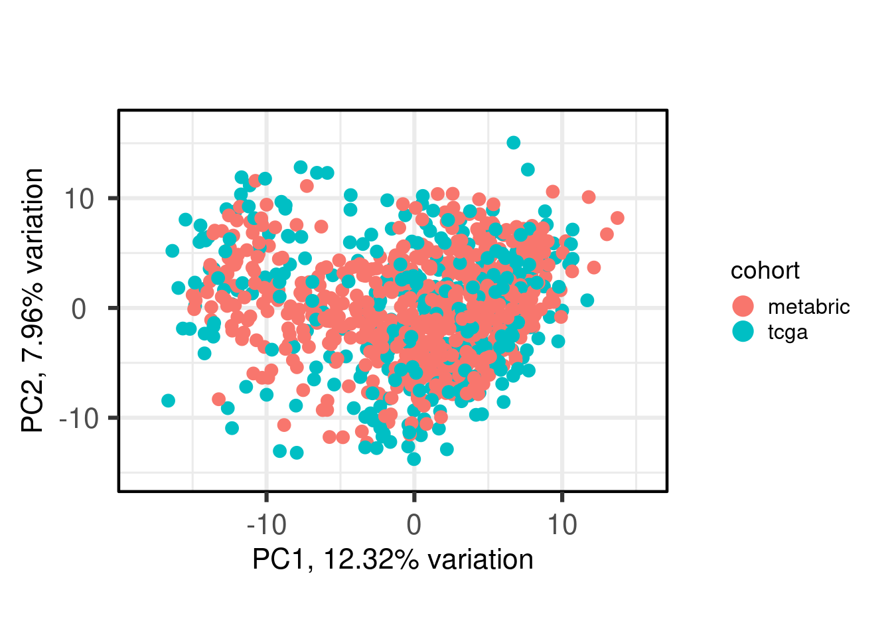
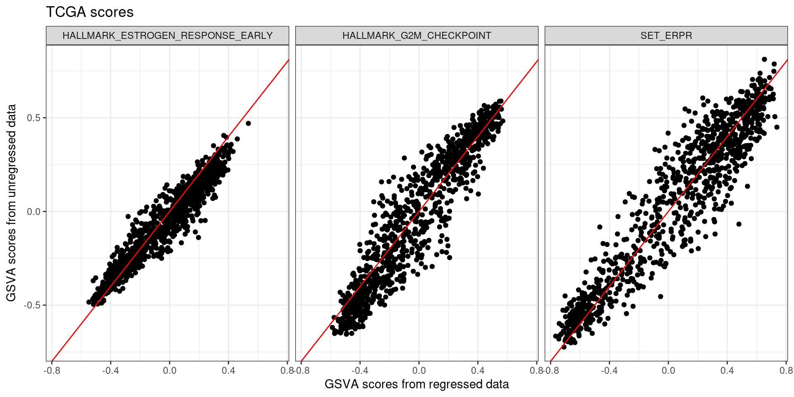
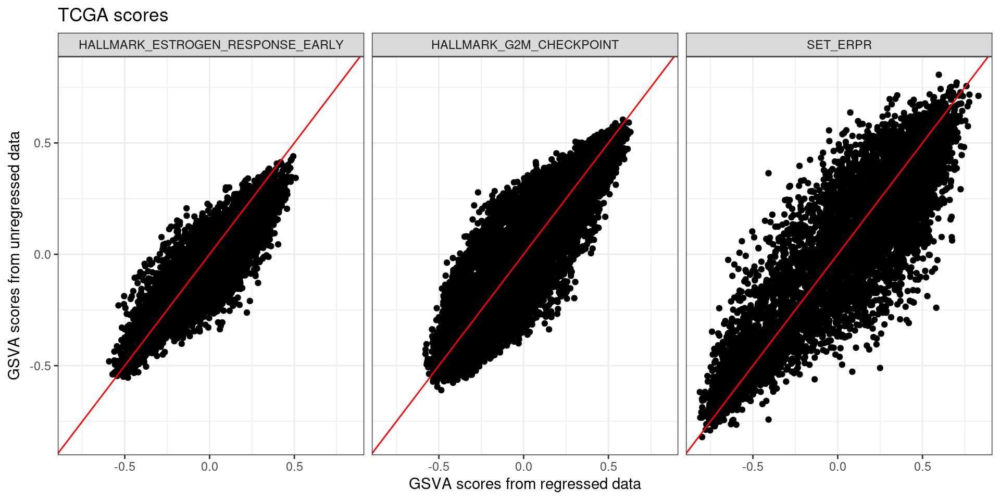
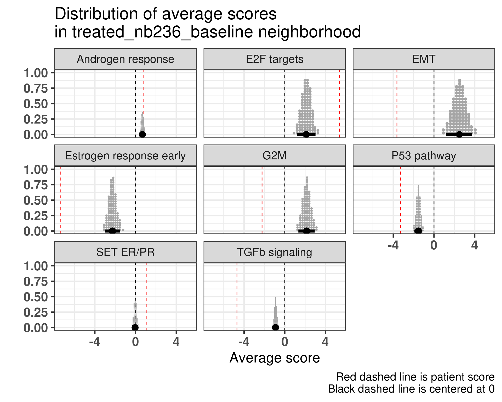
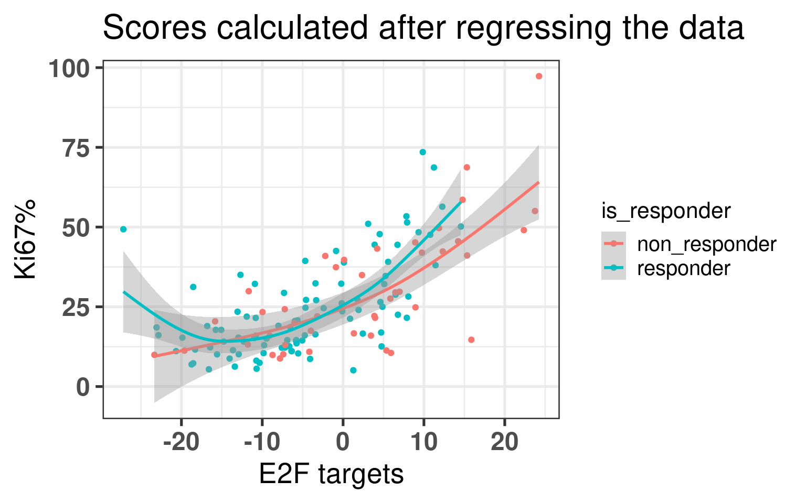
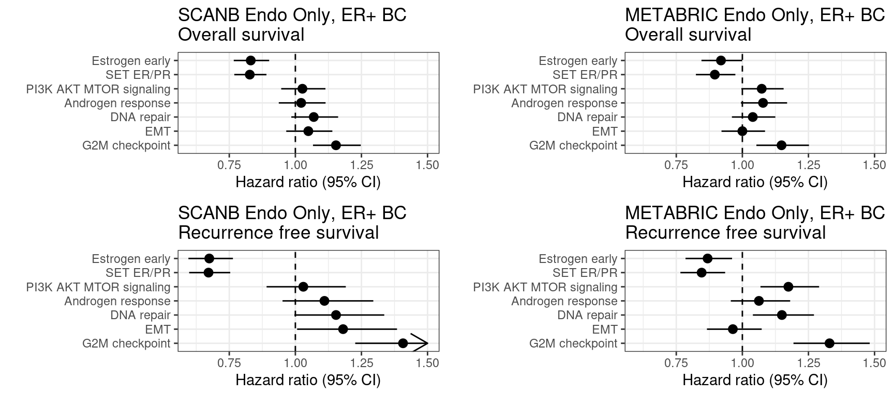
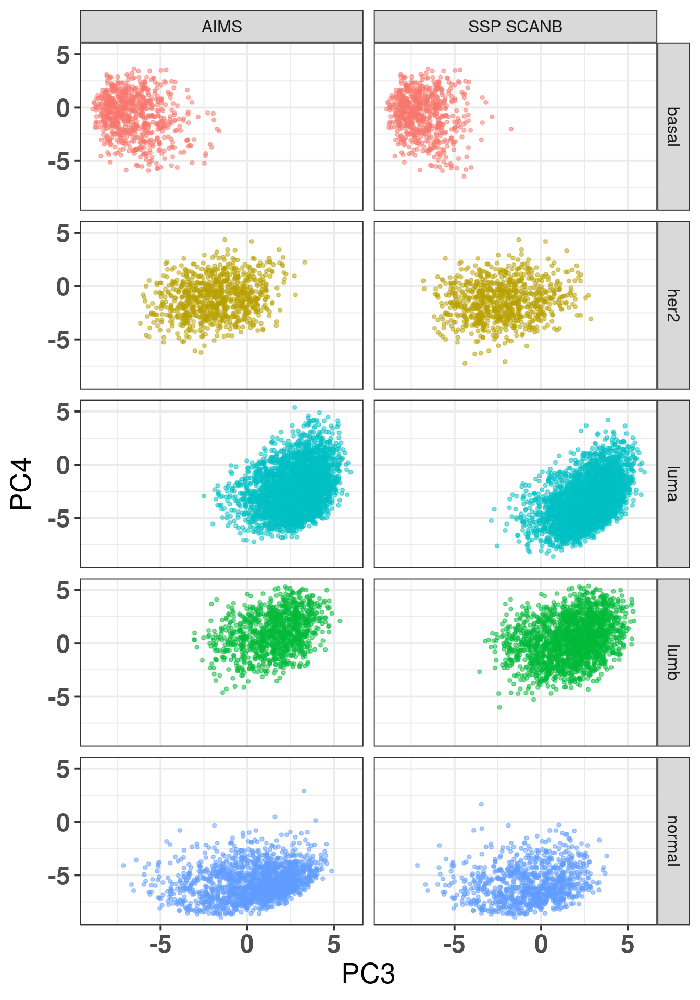

We have used some numbers of genes for doing the embedding. Here we try to perform the embedding with all the genes (~10000 genes) and then we try to regress out the components.
* The library is already synchronized with the lockfile.
6.1 Embedding with more than 1000 genes
And now we can visualize the results.
Figure 6.1: PCA projections colored by different factors and organized by different components. (A) Plot of the first two components colored by cohort. (B) Plot of the first two components colored by ER status. (C) Plot of the second and third components colored by cohort. (D) Plot of the second and third components colored by ER status. (E) Plot of the second and third components colored by PAM50. (F) Plot of the second and third components colored by INTCLUST, only METABRIC has an assigned value for this variable, NAs are TCGA samples.
And now we can visualize the results.
Figure 6.2: PCA projections colored by different factors and organized by different components. (A) Plot of the first two components colored by cohort. (B) Plot of the first two components colored by ER status. (C) Plot of the second and third components colored by cohort. (D) Plot of the second and third components colored by ER status. (E) Plot of the second and third components colored by PAM50. (F) Plot of the second and third components colored by INTCLUST, only METABRIC has an assigned value for this variable, NAs are TCGA samples.
Figure 6.3: PCA embedding colored by cohort. The components used are the first and second components.
Figure 6.4 shows that the SCANB samples are also well mixed regarding the clinical factors, including the \(SET_{ER/PR}\) signature.
Figure 6.4: PCA embedding of all samples from TCGA, SCANB and METABRIC. (A) Colored by cohort, (B) colored by ER status, (C) colored by PAM50 molecular subtype, (D) colored by the \(SET_{ER/PR}\) signature and only SCANB samples.
Let us also check the other components in the biplots.
We see that the pam50 subtypes are being separated using the components 3, 4 and also 8. In the component 8 there is some expression that is able to differentiate between HER2-like from all other samples.
We now plot by cohort.
In PC1, 2 and 5 there are some small differences in the differences of the distributions from the datasets. We will then remove these 3 components up to component 10 with exception of components 3, 4 and 5.
6.2 Removing the batch effects
We now try to remove the batch effects by removing all the PCs that are not of interest, so we remove the first two components and the fifth as well. We then calculate the scores for each cohort separately and then compare to what was calculated before. We can then try to calculate the scores using samples coming from all cohorts.

In general it looks good, the luminal B population is a bit compressed towards the luminal A population though.
There is a very good merging of the datasets. We see mostly green points because they are the majority.
Now we see that the first loadings has a tail in a similar fashio as the other loadings.
We now try to calculate the scores of the samples using these new embeddings only from TCGA samples as we will compare the results later on.
And we can now check and compare the scores.

We see that for the three pathways the correlation is positive and strong. The difference is that it is a bit noisy, so the correlation is not perfect. What is interesting to see is that at the extremes the scores have less variation usually.
We now calculate the scores from SCANB and compare the results. Remember that SCANB was not used for the PCA training.
And we can now check and compare the scores.

The same phenomenon happened. Samples in the endges have lower variability, but samples in the middle are the ones that have high variability. For example there are several samples from the regressed data with SET_ERPR score close to 0.25 and negative scores.
What happens now if we use another dataset and then use only one sample to calculate the score. Let us include SCANB samples in the pipeline. For this we select 50 scanb samples and 100 random samples from tcga and metabric. We then combine all these samples together and calculate the GSVA scores.
We now plot only the scores from the SCANB samples.
So it seems there are still dataset related problems there when calculating the scores. The scores are positively correlated, but they are not quite the same as only using the SCANB dataset. Moreover, for G2M checkpoint the scores are concentrated around -0.4 from the regressed data but they are in a range going from - 0.4 to 0.1 in the unregressed data.
If we try to instead add some samples from the SCANB dataset as well randomly into the mix. How well does the scores get compared to the “ground truth”?
It does not work so well when including some SCANB samples together with the METABRIC and TCGA samples. We are trying to achieve a correlation of almost 1 with very low variability since we want to use the scores clinically.
Let us check the distribution of some genes for SCANB and TCGA after regressing out the first two PCs.
We see that even though the expression profile of the samples are overlapping there are discrepancies. That is why when using GSVA it does not work so well perhaps.
6.3 Scoring strategy with regressed data
We now try to use a slightly different scoring strategy. We can think of our data in a log scale, so what we do now instead is to sum all of our genes of interest and then subtract an average of the housekeeping genes expression levels.
First we check the distribution of this average for each cohort separately.
Figure 6.5: Distribution of the average of the housekeeping genes for distinct cohorts.
Indeed the tcga and metabric cohorts have an overlapping distribution, but the SCANB does not overlap completely, it is actually shifted. One should still take into account that the distributions are very close to 0, meaning that the housekeeping genes have very close to 0 values, as expected here in this case. We now calculate the score by taking this into account.
Figure 6.6: Scores obtained from regressed data of all the four cohorts TCGA, SCANB, METABRIC and POETIC compared to the original GSVA scores.
The scores are actually highly correlated, specially the estrogen related pathways. Also the correlation between the scores in general follows the same trends.
The plot below is a subset of the scores above to include in the publication.
Figure 6.7: Scores obtained from regressed data of all the four cohorts TCGA, SCANB, METABRIC and POETIC compared to the original GSVA scores.
We now compare the distributions of these scores. Across the different cohorts and pathways of interest.
And with all molecular subtypes together.
We see that the overlap is actually pretty good in general, even for SCANB. The only part where there is a bigger discrepancy is for G2M checkpoint. We see below that by calculating the GSVA score on the whole scanb cohort we don’t have this problem.
And as a comparison we plot with the original scores using GSVA on the whole cohort individually.
And all the subtypes together for the original score:
We see that by doing GSVA the distributions they overlap much more than using the regressed data and the simple sum of the values for those genes. Still for estrogen signaling it seems that the estrogen early signature is pretty robust.
6.3.1 Checking the patients from POETIC with new scores
We now use the new scores to evaluate the comparison with the neighboorhood, just as before in the previous chapter where we used the POETIC trial data.
Patient 63 Figure 6.8 is considered a responder. According to the scores, when comparing the estrogen early signature to its average distribution in the neighborhood, the score is higher.
Figure 6.8: Posterior distribution of the average scores in the neighborhood of patient 63 from POETIC trial. Each dot corresponds to a 1% quantile.
Patient 236 Figure 6.9 was considered a non responder. According to the scores, when comparing the estrogen early signature to its average distribution in the neighborhood, the score is lower, being in the 5% quantile.

Figure 6.9: Posterior distribution of the average scores in the neighborhood of patient 236 from POETIC trial. Each dot corresponds to a 1% quantile.
When comparing these two patients, there is also a difference in the androgen response score, which could be a reflection of different estrogen signaling.
It reflects what we saw previously as well.
6.3.2 Responder vs non responder comparison of new scores
We now compare the scores for responders and non responders.
The higher E2F targets in average the lower the estrogen early score is for non responders, whereas this correlation does not exist for responder patients. This difference is mostly drive by the high E2F target non responder tumors.
Now the plot below shows the correlation for baselien Ki67% and E2F targets for the score calculated in the regressed data in a single sample manner. We see a positive correlation between the two scores. Moreover, it is interesting to see that when the tumor has low Ki67, there is still a spectrum on the E2F targets score. Also there is no difference in the correlation between responders and non responders.

And lastly we compare the estrogen signaling signatures between responders and non-responder.
We see that the estrogen response early has a wider range when compared to the SET ER/PR score. That makes sense as this signature has over 100 genes, whereas SET ER/PR has only 18. Also the responder was very good in discriminating the responders and non responders. What we can conclude from this figure is that the samples with very low scores are usually non responders, which reflect their position in the molecular landscape, also in general responders have higher ER signaling than non responders.
Below is the figure with the GSVA scores before regressing the data, we see that SET ER/PR is not able to really distinguish completely the non-responders with very low score similar to what was done with GSVA. Even estrogen early had some differences.
And below is a figure with both GSVA and regressed scores together.
Figure 6.10: Comparing scoring strategies for responders and non responders in the POETIC dataset.
Below we show the correlation between these scores for all cohorts.
These scores are highly correlated but in different absolute scales. We now check the change in Ki67 for all patients and compare the scores with the original ones obtained with GSVA.
Figure 6.11: Comparison of original GSVA and regressed scores between responders and non responders compared to change in Ki67.
We see that the bigger the change the higher the score is when using the regressed data. Also the non responders tend to have scores mostly in the negative scale, whereas the responders are more shifted to the right. SET ER/PR is also a good measure here.
There is a very good match between the two scores in general, meaning that the regression scoring strategy capture relatively well the scores. There is one patient that is a non-responder and has a low regressed estrogen early but a GSVA score close to 0, let us check this patient.
It is a patient that is far to the left on the molecular landscape, among the basal like, and had an increase in Ki67 upon ET. So the new scoring system was able to capture this patient as with low score.
6.3.3 Survival analysis with the new scores
We can check how robust these scores are by performing survival analysis.

Figure 6.12: Overall survival analysis from SCANB and METABRIC cohorts and their scores. The formulas used were the same as for the estrogen signaling analysis. Coefficients were scaled before performing cox regression
The plot with TCGA is shown below.
Scores for TCGA are noisier than SCANB and METABRIC. Though the scaled scores they have comparable hazard ratios and also they follow what we saw previously. The only pathway that is a bit different is the PI3K AKT MTOR signaling. This pathway had a noisier correlation with the GSVA score as well.
6.4 Regressing the PDXs
We can use the regressing strategy to score the PDXs and then evaluate their scores.
We start by comparing the scores across the different control samples and their positions in the molecular landscape.
Figure 6.13: Embedding of only regressed PDX control samples on top of the METABRIC, SCANB and TCGA samples
The results are jus twhat we got previously as well, meaning that by using all these genes the information of the PDXs are still captured. The main differences is that the luminal B region is more compact compare to Figure 3.17.
And now that we have the results we can compare the PDXs as well.
Figure 6.14: Scores obtained from the regressed data of the PDXs.
The random 200 is just a gene set with 200 random genes that works as a control and serves as a comparison to the other pathways.
And below we show the distribution of some of the scores calculated for all the other cohorts as a comparison.
We see that METS15 is the one with the highest proliferation and lowest EMT, it is a PDX that comes from a pleural efusion. Also it is the PDX with the lowest apoptosis and highest DNA repair, probably due to a higher replication rate. Moreover, all these PDXs they have a estrogen response early scores higher than 0 in average, which is about the average of the scores in the ER+ BC samples.
Now we check what happens with some of the PDXs when they are treated with P4, to compare with Figure 3.19.
Figure 6.15: Comparison of position in the molecular landscape between CTRL, E2 and P4 treated samples with the regressed data
The results are very similar to what was seen previously using the GSVA. What is interesting here is that we have an absolute scale, so we can compare the scores.
6.5 singscore
We can try to use singscore instead, it is a sample dependent measure so it does not estimate the distribution of the gene expression levels before calculating the enrichment score.
We start by comparing with the GSVA scores.
We see that in all cases there is a correlation, but the interpretation changes. In some of the pathways there is difference in the singscores based on the cohort, this is not seen on GSVA.
The next two figures are the distributions of the singscore and GSVA filled by cohort.
For several pathways in the singscore the distributions are similar, but that is not always the case.
On the other hand GSVA gives very similar distributions for all the different cohorts. Therefore we actually need to use GSVA. It is important in the end to calculate scores based on the cohort.
We now move on and try the same analysis on the regressed data.
We start by comparing with the GSVA scores.
We see that in all cases there is a correlation, but the interpretation changes. In some of the pathways there is difference in the singscores based on the cohort, this is not seen on GSVA.
The next two figures are the distributions of the singscore and GSVA filled by cohort.
In the end the best way of scoring seems to be using GSVA on the unregressed data though it depends on the pathways. For example the hallmark estrogen response early and set ER/PR pathways seem to have been regressed quite well, so we can actually compare the results using the scores. On the other hand we can’t use the pathways G2M checkpoint, E2F targets and EMT. For the PI3K signaling score it seems it is comparable to SCANB only.
6.6 Using several pathways or just one pathway for GSVA
We now evaluate the effect of the scores for each pathway when using all the 53 pathways combined and each one individually. We use only TCGA for this step.
6.6.1 One vs all
We now calculate the scores for each gene set individually.
It seems they are all positively correlated, so one could calculate the scores basically using just one gene set with exception of some of the gene sets.
6.7 Minimum number of samples for GSVA
According to the original GSVA paper, a minimum of 10 samples are necessary to have a good power when using GSVA. Since here we have at least 5 molecular subgroups, we hypothesize we need at least 50 samples to get a good score so we can compare across cohorts. We will try with different numbers of samples using TCGA, we start with 10, 25, 50 and 100 samples and we compare with the scores using the full dataset.
The conclusion we can take here is that depending on the gene set not even 150 samples is enough. For some only 25 patients is already enough, such as SET ER/PR, androgen response, estrogen response early and E2F targets.
Could we mix around 20 samples of SCANB together with more samples from TCGA and METABRIC to get the scores? Let us try to adress this question again. We are using the regressed data now here as this is the only way.
There is still some correlation but the scores are shrinked in the end.
6.8 Normalization strategy
We can also try another way of normalizing, namely for each sample we can z scale it.
And now we can visualize the results.
Figure 6.16: PCA projections colored by different factors and organized by different components. (A) Plot of the first two components colored by cohort. (B) Plot of the first two components colored by ER status. (C) Plot of the second and third components colored by cohort. (D) Plot of the second and third components colored by ER status. (E) Plot of the second and third components colored by PAM50. (F) Plot of the second and third components colored by INTCLUST, only METABRIC has an assigned value for this variable, NAs are TCGA samples.
We see that samples are well embedded as well.
Figure 6.17: PCA embedding colored by cohort. The components used are the first and second components.
SCANB and POETIC are in between as expected and they are closer to their sequencing technology. Interestingly the variation for SCANB and TCGA are compressed in the PC1 vs PC2 axis compared to METABRIC and POETIC.
Figure 6.18 shows that the SCANB samples are also well mixed regarding the clinical factors, including the \(SET_{ER/PR}\) signature.
Figure 6.18: PCA embedding of all samples from TCGA, SCANB and METABRIC. (A) Colored by cohort, (B) colored by ER status, (C) colored by PAM50 molecular subtype, (D) colored by the \(SET_{ER/PR}\) signature and only SCANB samples.
In the end normalizing by scaling the sample before doing any embedding works as well. Though the embedding seems to be more compressed. I would argue that the qPCR-like normalization gives a bit better embedding.
6.9 ILC and position in the molecular landscape
Invasive lobular carcinoma is a subtype of ER+ BC. They tend to respond better to ET in the short term but they recurr after 20 years. Here we just show where the ILC BC lie in the molecular landscape.
Figure 6.19: Embedding of the lobular samples from SCANB on top METABRIC and TCGA
We see that they are mostly in the normal and luminal A region. Still there are several samples that are luminal B, meaning they are more proliferative.
6.10 genefu
With genefu it is possible to calculate scores from comercially available signatures. Here we try to use it on SCANB, METABRIC and TCGA. Moreover, we can start with ABiM, as this dataset has the gold standard ROR score obtained from nCounter data. This is a good way of validating the pipeline.
We start by comparing the molecular subtypes:
FALSE TRUE
14 86
86 out of 100 were correctly called. Here we are using the gold standard wich is the molecular subtype called from FT samples. The normal like subtype is not available from the FT prosigna assay. So we now compare the results with the SSP obtained from the SCANB team.
Below is the confusion matrix to see which subtypes were misclassified.
Confusion Matrix and Statistics
Reference
Prediction Basal Her2 LumB LumA Normal
Basal 13 0 0 0 0
Her2 0 8 0 0 0
LumB 1 1 33 1 0
LumA 1 0 7 32 0
Normal 1 0 0 2 0
Overall Statistics
Accuracy : 0.86
95% CI : (0.7763, 0.9213)
No Information Rate : 0.4
P-Value [Acc > NIR] : < 2.2e-16
Kappa : 0.7965
Mcnemar's Test P-Value : NA
Statistics by Class:
Class: Basal Class: Her2 Class: LumB Class: LumA
Sensitivity 0.8125 0.8889 0.8250 0.9143
Specificity 1.0000 1.0000 0.9500 0.8769
Pos Pred Value 1.0000 1.0000 0.9167 0.8000
Neg Pred Value 0.9655 0.9891 0.8906 0.9500
Prevalence 0.1600 0.0900 0.4000 0.3500
Detection Rate 0.1300 0.0800 0.3300 0.3200
Detection Prevalence 0.1300 0.0800 0.3600 0.4000
Balanced Accuracy 0.9062 0.9444 0.8875 0.8956
Class: Normal
Sensitivity NA
Specificity 0.97
Pos Pred Value NA
Neg Pred Value NA
Prevalence 0.00
Detection Rate 0.00
Detection Prevalence 0.03
Balanced Accuracy NA
All luminal A were predicted correctly. Some normal like were predicted to be luminal A or basal and Her2. There were some mismatches for the LumB, that were misclassified as LumA. Still it is ok.
Let us now calculate the ROR for the ABiM cohort.
Figure 6.20: Correlation between ROR obtained from prosigna assay and R package genefu
The correlation is relatively good and respects the molecular subtypes in general. The ROR obtained from genefu for some luminal B are not quite right as they are below 50.
We now move on to the other signatures: Mammaprint, EndoPredict (EP) and OncotypeDX Risk Score (RS).
Figure 6.21: Correlation between ROR obtained from prosigna assay and the mammaprint signature obtained from the R package genefu
Figure 6.21 shows the correlation between the mammaprint signature (named GENE70) and the ROR from prosigna.
Let us now compare the GENE70 signature with the risk score developed in the previous chapters. We use the ABiM 100 cohort to make the comparison. One side note, we are using only 51 out of the 70 probes available in the package. 15 probes don’t have any corresponding symbol. Out of the available genes, some are duplicated. For the duplicated genes, the correlation coefficients are all similar, so we can select just the first ocurrence in the list.
There is a good correlation between the two signatures, suggesting that the Mammaprint signature is somehow based on the position of the samples in the molecular landscape.
We now proceed and calculate the mammaprint scores for SCANB and METABRIC as well and only for ER+ BC samples.
Figure 6.22: Embedding of ER+ BC samples colored by the mammaprint score.
We see that the pattern is very close to what we have from the risk score created in the previous chapter. The figure below shows the correlation between mammaprint and the risk score once again.
Now for OncotypeDX:
Figure 6.23: Correlation between oncotypeDX and R package genefu
There is also a correlation between the risk score and oncotypeDX. The paper https://www.nature.com/articles/s41523-022-00492-0#Sec8 also used the genefu for calculating the oncotypeDX.
6.10.1 genefu and AIMS
Here we try to use AIMS to calculate the PAM50 subtypes for the and compare with the results obtained previously. We want to compare the classifications with the molecular landscape.
The confusion matrix below show the results of the AIMS PAM50 as the predicted and the reference is the PAM50 subtypes obtained from the SCANB team.
Confusion Matrix and Statistics
Reference
Prediction luma basal lumb her2 normal
luma 2645 0 778 73 68
basal 0 739 0 95 16
lumb 19 0 1122 20 0
her2 10 7 237 729 17
normal 827 14 7 48 1004
Overall Statistics
Accuracy : 0.7362
95% CI : (0.7266, 0.7455)
No Information Rate : 0.4131
P-Value [Acc > NIR] : < 2.2e-16
Kappa : 0.6434
Mcnemar's Test P-Value : NA
Statistics by Class:
Class: luma Class: basal Class: lumb Class: her2
Sensitivity 0.7555 0.97237 0.5233 0.75544
Specificity 0.8152 0.98561 0.9938 0.96391
Pos Pred Value 0.7421 0.86941 0.9664 0.72900
Neg Pred Value 0.8257 0.99725 0.8603 0.96843
Prevalence 0.4131 0.08968 0.2530 0.11386
Detection Rate 0.3121 0.08720 0.1324 0.08602
Detection Prevalence 0.4205 0.10029 0.1370 0.11799
Balanced Accuracy 0.7854 0.97899 0.7586 0.85968
Class: normal
Sensitivity 0.9086
Specificity 0.8784
Pos Pred Value 0.5284
Neg Pred Value 0.9846
Prevalence 0.1304
Detection Rate 0.1185
Detection Prevalence 0.2242
Balanced Accuracy 0.8935
We see that there is a big misclassification from luminal A samples to normal like samples and several luminal B are misclassified as luminal A.
The plot below shows the coloring by the reference PAM50 and the predicted by AIMS.

Figure 6.24: SCANB embedding stratified by PAM50 algorithms by both the ones provided by the SCANB (SSP) and the AIMS algorithm
On the left there is the coloring for the AIMS algorithm and on the right from the reference. We see the missclassified samples are not randomly misclassified, they are on the boundaries.
The plot below shows the maximum probability score for each sample individually.
The majority of samples have probabilities of either 1 or 0. Not so often in between.
And the figure below shows the confusion matrix for the ABIM cohort.
Confusion Matrix and Statistics
Reference
Prediction luma basal lumb her2 normal
luma 28 0 17 1 3
basal 0 11 0 2 1
lumb 0 0 16 0 0
her2 0 0 0 13 0
normal 2 0 0 2 4
Overall Statistics
Accuracy : 0.72
95% CI : (0.6213, 0.8052)
No Information Rate : 0.33
P-Value [Acc > NIR] : 1.786e-15
Kappa : 0.6291
Mcnemar's Test P-Value : NA
Statistics by Class:
Class: luma Class: basal Class: lumb Class: her2
Sensitivity 0.9333 1.0000 0.4848 0.7222
Specificity 0.7000 0.9663 1.0000 1.0000
Pos Pred Value 0.5714 0.7857 1.0000 1.0000
Neg Pred Value 0.9608 1.0000 0.7976 0.9425
Prevalence 0.3000 0.1100 0.3300 0.1800
Detection Rate 0.2800 0.1100 0.1600 0.1300
Detection Prevalence 0.4900 0.1400 0.1600 0.1300
Balanced Accuracy 0.8167 0.9831 0.7424 0.8611
Class: normal
Sensitivity 0.5000
Specificity 0.9565
Pos Pred Value 0.5000
Neg Pred Value 0.9565
Prevalence 0.0800
Detection Rate 0.0400
Detection Prevalence 0.0800
Balanced Accuracy 0.7283
We see here that in this case that there are several luminal B samples missclassified as luminal A.
The misclassified samples from AIMS they really seem to be on the top region together with the luminal A. Some of the normal samples are even in the luminal A region.
These molecular subtyping do not make much sense. We know that by giving P4 estrogen signaling actually goes up, so a expected subtype change is from normal to either luminal A and B. Moreover, these PDXs are in an active state of proliferation due to the MIND model, so being in the normal like region is not a good indication. Also this results show that almost all PDXs would be normal like which does not go in hand with the results we get from the lab.
And the probabilities are available below.
And another validation is using the normal cohort. Below is the number of all predicted molecular subtypes.
Normal
66
All samples are normal-like as expected, since they are normal. So it could be that the AIMS algorithm is not suited for PDXs but for clinical samples it works quite well.
6.11 nanostring signatures
In this section we try the nanostring panel signatures provided by the Breast Cancer 360 test. We will compare some of the signatures by using GSVA on the original datasets and by calculating the sum of the gene expression levels of the genes when regressing out the 1st, 2nd and 5th components.
The table below shows the number of genes available for each signature and each dataset. In general it seems that all signatures have over 70% of the genes available, a good indication.
pathway
tcga
scanb
metabric
poetic
n
average_percentage
adhesion_and_migration
65
61
68
83
83
0.83
angiogenesis
27
27
29
33
34
0.85
antigen_presentation
20
19
19
19
21
0.92
apoptosis
7
7
5
9
9
0.78
cytokine_and_chemokine_signaling
38
29
37
47
50
0.76
dna_damage_repair
126
108
118
133
143
0.85
emt
72
71
63
82
85
0.85
er_signaling
27
25
24
25
27
0.94
epigenetic_regulation
16
16
14
17
18
0.88
hedgehog
14
10
17
20
20
0.76
immune_infiltration
24
21
23
34
34
0.75
jak_stat
37
36
35
45
47
0.81
mapk
67
61
68
95
100
0.73
notch
21
19
16
21
22
0.88
pi3k
72
67
63
91
96
0.76
proliferation
121
113
114
136
144
0.84
stromal_markers
6
6
6
6
6
1
subtypes
69
63
62
69
70
0.94
tgf_beta
47
47
42
53
57
0.83
transcriptional_misregulation
44
37
44
61
63
0.74
triple_negative_biology
38
32
41
49
50
0.8
tumor_metabolism
15
15
14
14
15
0.97
wnt
37
34
44
51
51
0.81
internal_reference_gene
18
18
16
17
18
0.96
We now compare the scores obtained by GSVA on the datasets and see how they relate with nanostring scores obtained with the regressed data.
First we compare GSVA SET ER/PR with ER signaling obtained by the scoring procedure when regressing the data.
Next we compare EMT, G2M with proliferation and PI3K signaling.
In general there is a correlation but the scores are not so well correlated and they are noisy. One that works fairly well is the ER signaling score, but the others not so well. The proliferation score barely shows any difference between luminal A and B patients in any of the cohorts.
Perhaps if we calculate the scores using the hallmarks pathways the scores are better correlated, since they are the same gene sets.
Below we plot the correlation between the proliferation pathway using GSVA and the regressed scoring strategy for the TCGA cohort.
It is perfectly correlated.
And for ER signaling:
Also it is very much correlated. So the problem in the end is comparing the hallmarks signatures with the nanostring. But interestingly the nanostring proliferation signature was not good to pick up the differences between luminal A and B.
6.12 Risk stratification and the molecular landscape
One common problem in the clinics is what to do with patients that are in the so called intermediate risk group. Here we use the SSP classification from the SCANB team to check what is the position of these patients in the molecular landscape.
Figure 6.25: Embedding of the SCANB samples colored by their predicted ROR risk category.
Figure 6.25 shows that the embedding detects the positions where the intermediate risk patients are, namely they are in the intersection of the luminal A and B subtypes.
And Figure 6.26 below shows that there is a shift in PC4 for the intermediate to the high risk group, which makes sense as this is exactly where the distinction between luminal A and B are.
Figure 6.26: Distribution of the principal components for the different risk groups defined by the SSP ROR scores.
6.13 Late distant recurrence: trying to find biomarkers
One of the key problems in breast cancer research is finding patients that will develop late recurrence. Here we use METABRIC as it has a long follow-up history. We start by plotting the embedding of all METABRIC patients that had a followup longer than 10 years and received only ET. We then try to predict which patients recurr or not based on the molecular data by using lasso regression. For this we use the package glmnet that provides such functionality.
In general there is no distinction in terms of the molecular landscape among the patients that recurred, both in terms of molecular subtype and position in the molecular landscape.
We now compare their molecular scores.
Even here we don’t see much difference. Unless there is some kind of linear combination of pathways, I don’t think it would be possible to classify these two groups by using only transcriptomic data and these pathways. In any case we proceed now with the lasso regression using the 50 pathways.
We see that actually it does not work. And when we predict all the samples are predicted as there is no recurrence.
.
no
407
This is probably because of the unbalanced dataset. Next we try with random forest as well.
Call:
randomForest(formula = as.factor(is_there_recurrence) ~ ., data = et_metabric_late_data[, c("is_there_recurrence", pathways_to_compare, "AGE_AT_DIAGNOSIS", "LYMPH_NODES_EXAMINED_POSITIVE", "npi")], ntree = 500)
Type of random forest: classification
Number of trees: 500
No. of variables tried at each split: 7
OOB estimate of error rate: 17.2%
Confusion matrix:
no yes class.error
no 337 2 0.005899705
yes 68 0 1.000000000
That is not the case, still we can’t predict if a patient will develop recurrence or not in this cohort.
Source Code
# Tests and tries We have used some numbers of genes for doing the embedding. Here we try to perform the embedding with all the genes (~10000 genes) and thenwe try to regress out the components. ```{r setup}renv::restore()library(tidyverse)library(ggplot2)library(PCAtools)library(singscore)library(SummarizedExperiment)library(survival)library(genefu)library(caret)source("utils.R")source("first_run.R")# the following script load all data necessary to run the chunks.# the data is generated from this quarto document itself, therefore# if you are running this documents the first time and don't have the# files, comment the following lines. Moreover, if this is your first# time running the document, you should run all chunks, to generate # all the necessary files, if you don't have them. Once all files # are saved and available in the respective folder, the following# lines can be executed. if (first_run){ load_at_setup <-FALSE} else { load_at_setup <-TRUE}name_document <-"trying"source("load_rds_files.R")# by setting the dev to png and pdf, this saves the figures in a specific# folder in both formats. moreover, since png is coming first, it shows# this figure when rendering the html. What is nice about this is that it# inherits the properties from the chunk to save the figure, so no need# to use ggplot2::ggsave to save the plots. this also works knitr::opts_chunk$set(dev =c('png', 'pdf', 'svg'))options(bitmapType ='cairo')p4_pathways <- msigdbr::msigdbr() %>% dplyr::filter(gs_name %in%c("WILCOX_RESPONSE_TO_PROGESTERONE_UP","GOBP_RESPONSE_TO_PROGESTERONE" ))gene_sets_prog <- dplyr::bind_rows( gene_sets, p4_pathways)gene_sets_ <-sapply( gene_sets_prog$gs_name %>% unique,function(x, gene_sets) gene_sets %>% dplyr::filter(gs_name == x) %>% dplyr::pull(gene_symbol),gene_sets = gene_sets_prog,USE.NAMES =TRUE,simplify =FALSE)datasets$poetic$sample_name <-colnames(datasets$poetic)```## Embedding with more than 1000 genes```{r, eval = first_run}# we perform now the normalization for all genescommon_genes <-Reduce(intersect, lapply(datasets, rownames))stable_genes <-intersect(stable_genes, common_genes)datasets_normalized <-mapply( get_final_ranking_values,sum_exp = datasets,assay_to_use =c(which_exp, list(poetic ="normalized_intensity")),MoreArgs =list(stable_genes = stable_genes,most_variable_genes = common_genes ),USE.NAMES =TRUE,SIMPLIFY =FALSE)merged_col_data <-lapply(datasets_normalized, colData) %>%lapply(., data.frame) %>% dplyr::bind_rows(.id ="cohort")set.seed(1329)samples_for_training <- merged_col_data %>% dplyr::filter(cohort %in% which_cohorts_training) %>% dplyr::pull(sample_name) %>%sample(., size =1000) # and now we can perform the molecular embeddingtraining_set <-lapply( datasets_normalized[which_cohorts_training], function(sum_exp, i, genes_for_pca) assay(sum_exp[genes_for_pca, ], i = i) %>%data.frame(check.names =FALSE), i ="avg_ranking",genes_for_pca = common_genes) %>% dplyr::bind_cols() %>% .[, samples_for_training]pca_fit_all_genes <- PCAtools::pca( training_set,metadata = dplyr::bind_rows(lapply( datasets_normalized[which_cohorts_training],function(df){colData(df) %>% data.frame %>% dplyr::filter(sample_name %in%colnames(training_set)) } ),.id ="cohort" ) %>% .[colnames(training_set), ],center =FALSE,scale =FALSE)saveRDS( pca_fit_all_genes,"../results/rds_files/trying/pca_fit_all_genes.rds")saveRDS( datasets_normalized,"../results/rds_files/trying/datasets_normalized_all_genes.rds")saveRDS( merged_col_data,"../results/rds_files/trying/merged_col_data_trying.rds")```And now we can visualize the results.```{r, fig.width=14, fig.height=16}#| label: fig-pca-embeddings-1#| fig-cap: PCA projections colored by different factors and organized#| by different components. (A) Plot of the first two components colored#| by cohort. (B) Plot of the first two components colored by ER status.#| (C) Plot of the second and third components colored by cohort. #| (D) Plot of the second and third components colored by ER status.#| (E) Plot of the second and third components colored by PAM50.#| (F) Plot of the second and third components colored by INTCLUST, only#| METABRIC has an assigned value for this variable, NAs are TCGA samples.plots_pca_fit <-list()point_size <-2plots_pca_fit$pc1_pc2_cohort <- PCAtools::biplot( pca_fit_all_genes,colby ="cohort",lab =NULL, legendPosition ="right",x ="PC1",y ="PC2",title ="First two components colored by cohort",subtitle ="Only 1000 training samples",pointSize = point_size)plots_pca_fit$pc1_pc2_er_status <- PCAtools::biplot( pca_fit_all_genes,colby ="er_status",lab =NULL, legendPosition ="right",x ="PC1",y ="PC2",title ="First two components colored by ER status",subtitle ="Only 1000 training samples",pointSize = point_size)plots_pca_fit$pc2_pc3_cohort <- PCAtools::biplot( pca_fit_all_genes,colby ="cohort",lab =NULL, legendPosition ="right",x ="PC2",y ="PC3",title ="Second and third components colored by cohort",subtitle ="Only 1000 training samples",pointSize = point_size)plots_pca_fit$pc2_pc3_er_status <- PCAtools::biplot( pca_fit_all_genes,colby ="er_status",lab =NULL, legendPosition ="right",x ="PC2",y ="PC3",title ="Second and third components colored by ER status",subtitle ="Only 1000 training samples",pointSize = point_size)plots_pca_fit$pc2_pc3_pam50 <- PCAtools::biplot( pca_fit_all_genes,colby ="pam50",lab =NULL, legendPosition ="right",x ="PC2",y ="PC3",title ="Second and third components colored by PAM50",subtitle ="Only 1000 training samples",pointSize = point_size)plots_pca_fit$pc2_pc3_pam50 <- plots_pca_fit$pc2_pc3_pam50 + ggplot2::scale_color_manual(values =get_colors_pam50(pca_fit_all_genes$metadata) )plots_pca_fit$pc2_pc3_intclust <- PCAtools::biplot( pca_fit_all_genes,colby ="INTCLUST",lab =NULL, legendPosition ="right",x ="PC2",y ="PC3",title ="Second and third components colored by INTCLUST",subtitle ="Only 1000 training samples",pointSize = point_size)plots_pca_fit$pc3_pc4_pam50 <- PCAtools::biplot( pca_fit_all_genes,colby ="pam50",lab =NULL, legendPosition ="right",x ="PC3",y ="PC4",title ="Third and fourth components colored by PAM50",subtitle ="Only 1000 training samples",pointSize = point_size) plots_pca_fit$pc3_pc4_pam50 <- plots_pca_fit$pc3_pc4_pam50 + ggplot2::scale_color_manual(values =get_colors_pam50(pca_fit_all_genes$metadata) )plots_pca_fit$pc3_pc4_cohort <- PCAtools::biplot( pca_fit_all_genes,colby ="cohort",lab =NULL, legendPosition ="right",x ="PC3",y ="PC4",title ="Third and fourth components colored by cohort",subtitle ="Only 1000 training samples",pointSize = point_size)cowplot::plot_grid(plotlist = plots_pca_fit, ncol =2, labels ="AUTO")``````{r, eval = first_run}datasets_pca_coordinates <-lapply( datasets_normalized, get_pca_coordinates,pca_fit = pca_fit_all_genes,genes_for_pca =rownames(pca_fit_all_genes$loadings))df_pca_coordinates <- datasets_pca_coordinates %>%do.call(rbind, .) %>% data.frame %>% tibble::rownames_to_column(var ="sample_name") %>% dplyr::inner_join( ., merged_col_data,by ="sample_name" )saveRDS( df_pca_coordinates,"../results/rds_files/trying/df_pca_coordinates_all_genes.rds")``````{r}plot_pca_coordinates( df_pca_coordinates %>% dplyr::slice(1:n()),color ="cohort",x ="PC3",y ="PC4",size =1,base_size =10,title =paste0("Embedding of all samples from TCGA,\n","METABRIC and SCANB" )) + ggplot2::scale_color_viridis_d() + ggplot2::theme_bw(base_size =15) +change_plot_aes_point() +change_guides_point()``````{r, eval = first_run}remove_metabric <- df_pca_coordinates %>% dplyr::filter(PC4 >10& cohort =="metabric") %>% dplyr::pull(sample_name)set.seed(1329)samples_for_training <- merged_col_data %>% dplyr::filter(cohort %in% which_cohorts_training) %>% dplyr::pull(sample_name) %>%sample(., size =1000) %>%setdiff(., remove_metabric)# and now we can perform the molecular embeddingtraining_set <-lapply( datasets_normalized[which_cohorts_training], function(sum_exp, i, genes_for_pca) assay(sum_exp[genes_for_pca, ], i = i) %>%data.frame(check.names =FALSE), i ="avg_ranking",genes_for_pca = common_genes) %>% dplyr::bind_cols() %>% .[, samples_for_training]pca_fit_all_genes_wo_outliers <- PCAtools::pca( training_set,metadata = dplyr::bind_rows(lapply( datasets_normalized[which_cohorts_training],function(df){colData(df) %>% data.frame %>% dplyr::filter(sample_name %in%colnames(training_set)) } ),.id ="cohort" ) %>% .[colnames(training_set), ],center =FALSE,scale =FALSE)saveRDS( pca_fit_all_genes_wo_outliers, "../results/rds_files/trying/pca_fit_all_genes_wo_outliers.rds")```And now we can visualize the results.```{r, fig.width=14, fig.height=16}#| label: fig-pca-embeddings-2#| fig-cap: PCA projections colored by different factors and organized#| by different components. (A) Plot of the first two components colored#| by cohort. (B) Plot of the first two components colored by ER status.#| (C) Plot of the second and third components colored by cohort. #| (D) Plot of the second and third components colored by ER status.#| (E) Plot of the second and third components colored by PAM50.#| (F) Plot of the second and third components colored by INTCLUST, only#| METABRIC has an assigned value for this variable, NAs are TCGA samples.plots_pca_fit <-list()point_size <-2plots_pca_fit$pc1_pc2_cohort <- PCAtools::biplot( pca_fit_all_genes_wo_outliers,colby ="cohort",lab =NULL, legendPosition ="right",x ="PC1",y ="PC2",title ="First two components colored by cohort",subtitle ="Only 1000 training samples",pointSize = point_size)plots_pca_fit$pc1_pc2_er_status <- PCAtools::biplot( pca_fit_all_genes_wo_outliers,colby ="er_status",lab =NULL, legendPosition ="right",x ="PC1",y ="PC2",title ="First two components colored by ER status",subtitle ="Only 1000 training samples",pointSize = point_size)plots_pca_fit$pc2_pc3_cohort <- PCAtools::biplot( pca_fit_all_genes_wo_outliers,colby ="cohort",lab =NULL, legendPosition ="right",x ="PC2",y ="PC3",title ="Second and third components colored by cohort",subtitle ="Only 1000 training samples",pointSize = point_size)plots_pca_fit$pc2_pc3_er_status <- PCAtools::biplot( pca_fit_all_genes_wo_outliers,colby ="er_status",lab =NULL, legendPosition ="right",x ="PC2",y ="PC3",title ="Second and third components colored by ER status",subtitle ="Only 1000 training samples",pointSize = point_size)plots_pca_fit$pc2_pc3_pam50 <- PCAtools::biplot( pca_fit_all_genes_wo_outliers,colby ="pam50",lab =NULL, legendPosition ="right",x ="PC2",y ="PC3",title ="Second and third components colored by PAM50",subtitle ="Only 1000 training samples",pointSize = point_size)plots_pca_fit$pc2_pc3_pam50 <- plots_pca_fit$pc2_pc3_pam50 + ggplot2::scale_color_manual(values =get_colors_pam50(pca_fit_all_genes_wo_outliers$metadata) )plots_pca_fit$pc2_pc3_intclust <- PCAtools::biplot( pca_fit_all_genes_wo_outliers,colby ="INTCLUST",lab =NULL, legendPosition ="right",x ="PC2",y ="PC3",title ="Second and third components colored by INTCLUST",subtitle ="Only 1000 training samples",pointSize = point_size)plots_pca_fit$pc3_pc4_pam50 <- PCAtools::biplot( pca_fit_all_genes_wo_outliers,colby ="pam50",lab =NULL, legendPosition ="right",x ="PC3",y ="PC4",title ="Third and fourth components colored by PAM50",subtitle ="Only 1000 training samples",pointSize = point_size) plots_pca_fit$pc3_pc4_pam50 <- plots_pca_fit$pc3_pc4_pam50 + ggplot2::scale_color_manual(values =get_colors_pam50(pca_fit_all_genes_wo_outliers$metadata) )plots_pca_fit$pc3_pc4_cohort <- PCAtools::biplot( pca_fit_all_genes_wo_outliers,colby ="cohort",lab =NULL, legendPosition ="right",x ="PC3",y ="PC4",title ="Third and fourth components colored by cohort",subtitle ="Only 1000 training samples",pointSize = point_size)cowplot::plot_grid(plotlist = plots_pca_fit, ncol =2, labels ="AUTO")``````{r, eval = first_run}datasets_pca_coordinates <-lapply( datasets_normalized, get_pca_coordinates,pca_fit = pca_fit_all_genes_wo_outliers,genes_for_pca =rownames(pca_fit_all_genes_wo_outliers$loadings))df_pca_coordinates_wo_outliers <- datasets_pca_coordinates %>%do.call(rbind, .) %>% data.frame %>% tibble::rownames_to_column(var ="sample_name") %>% dplyr::inner_join( ., merged_col_data,by ="sample_name" )saveRDS( df_pca_coordinates_wo_outliers,"../results/rds_files/trying/df_pca_coordinates_wo_outliers.rds")``````{r}plot_pca_coordinates( df_pca_coordinates_wo_outliers %>% dplyr::slice(1:n()),color ="cohort",x ="PC3",y ="PC4",size =1,base_size =10,title =paste0("Embedding of all samples from TCGA,\n","METABRIC and SCANB" )) + ggplot2::scale_color_viridis_d() + ggplot2::theme_bw(base_size =15) +change_plot_aes_point() +change_guides_point()``````{r}#| label: fig-pca-scanb-pc1#| fig-cap: PCA embedding colored by cohort. The components used are the#| first and second components.plot_pca_coordinates( df_pca_coordinates_wo_outliers,color ="cohort",x ="PC1",y ="PC2",size =1,base_size =10,title =paste0("Embedding of all samples from TCGA,\n","METABRIC and SCANB" )) + ggplot2::theme_bw(base_size =15) +change_plot_aes_point() +change_guides_point()```@fig-pca-scanb-er-pam50-all-genes shows that the SCANB samples are also well mixedregarding the clinical factors, including the $SET_{ER/PR}$ signature.```{r, fig.width=16, fig.height=12}#| label: fig-pca-scanb-er-pam50-all-genes#| fig-cap: PCA embedding of all samples from TCGA, SCANB and METABRIC.#| (A) Colored by cohort,#| (B) colored by ER status, (C) colored by PAM50 molecular subtype,#| (D) colored by the $SET_{ER/PR}$ signature and only SCANB samples.size <-2base_size <-20plots_with_scanb <-sapply(c("cohort", "er_status", "pam50", "SET_ERPR"), plot_pca_coordinates,df_pca = df_pca_coordinates_wo_outliers %>% dplyr::filter( pam50 %in%c("luma", "lumb", "basal", "her2", "normal") ) %>% dplyr::filter(!(cohort %in%c("poetic"))) %>% dplyr::slice(sample(1:n())),x ="PC3", y ="PC4",size = size,base_size = base_size,title =paste0("Embedding of all samples from TCGA,\n","METABRIC and SCANB" ),USE.NAMES =TRUE, simplify =FALSE)plots_with_scanb$cohort <- plots_with_scanb$cohort +change_plot_aes_point() +change_guides_point()plots_with_scanb$pam50 <- plots_with_scanb$pam50 + ggplot2::scale_color_manual(values =get_colors_pam50(plots_with_scanb$pam50$data) ) + ggplot2::labs(color ="PAM50") +change_plot_aes_point() +change_guides_point()plots_with_scanb$er_status <- plots_with_scanb$er_status + ggplot2::scale_color_viridis_d() + ggplot2::labs(color ="ER status") +change_plot_aes_point() +change_guides_point()plots_with_scanb$SET_ERPR <- df_pca_coordinates_wo_outliers %>% dplyr::filter(cohort %in%c("scanb")) %>% ggplot2::ggplot(aes_string(x ="PC3", y ="PC4", z ="SET_ERPR")) + ggplot2::stat_summary_hex(bins =25) + ggplot2::scale_fill_viridis_c() + ggplot2::labs(title ="Embedding of SCANB only",fill =expression(SET[ER/PR]) ) + ggplot2::theme_bw(base_size = base_size) +change_plot_aes_point()cowplot::plot_grid(plotlist = plots_with_scanb,ncol =2)``````{r, fig.width=12, fig.height=8}select_pcs <-paste0("PC", 1:30)pca_fit_all_genes_wo_outliers$loadings %>% data.frame %>% dplyr::select(dplyr::all_of(select_pcs)) %>% tidyr::pivot_longer(cols = dplyr::all_of(select_pcs),names_to ="component", values_to ="loadings" ) %>% ggplot2::ggplot(aes(x =abs(loadings)) ) + ggplot2::geom_histogram(bins =30) + ggplot2::facet_wrap(~component) + ggplot2::labs(title ="Histogram of the loadings from the first four components" ) + ggplot2::theme_bw(base_size =20) +change_plot_aes_point()```Let us also check the other components in the biplots.```{r, fig.width=16, fig.height=12}color_by <-"pam50"GGally::ggpairs( df_pca_coordinates_wo_outliers %>% dplyr::filter(sample_name %in% pca_fit_all_genes_wo_outliers$metadata$sample_name ) %>% dplyr::select(dplyr::all_of(c(paste0("PC", 1:10), color_by))),aes(color =!!sym(color_by), alpha =0.5))```We see that the pam50 subtypes are being separated using the components 3, 4and also 8. In the component 8 there is some expression that is able to differentiate between HER2-like from all other samples.We now plot by cohort.```{r, fig.width=16, fig.height=12}color_by <-"cohort"GGally::ggpairs( df_pca_coordinates_wo_outliers %>% dplyr::filter(sample_name %in% pca_fit_all_genes_wo_outliers$metadata$sample_name ) %>% dplyr::select(dplyr::all_of(c(paste0("PC", 1:10), color_by))),aes(color =!!sym(color_by), alpha =0.5))```In PC1, 2 and 5 there are some small differences in the differences of the distributions from the datasets. We will then remove these 3 componentsup to component 10 with exception of components 3, 4 and 5.## Removing the batch effectsWe now try to remove the batch effects by removing all the PCs that are notof interest, so we remove the first two components and the fifth as well. Wethen calculate the scores for each cohort separately and then compareto what was calculated before. We can then try to calculate the scoresusing samples coming from all cohorts.```{r, eval = first_run}data_together <-lapply( datasets_normalized, \(x, y) assay(x, y) %>% as.matrix,"avg_ranking") %>%Reduce(cbind, .)samples_for_training <- pca_fit_all_genes_wo_outliers$metadata$sample_namerownames(df_pca_coordinates_wo_outliers) <- df_pca_coordinates_wo_outliers$sample_namename_components <-colnames(pca_fit_all_genes_wo_outliers$loadings)# from previous analysis we decided that the component 5 still included# differences between the two datasets, so we decided to remove it as well # besides component 1 and 2remove_components <-paste0("PC", c(1, 2, 5))keep_components <-setdiff(name_components, remove_components)# the code below calculates the regressed dataframe for all samples from# scanb, tcga and metabricdf_pcs_regressed <-as.matrix( df_pca_coordinates_wo_outliers[colnames(data_together), keep_components]) %*%t(pca_fit_all_genes_wo_outliers$loadings[, keep_components]) %>% tpca_removed_pcs <- PCAtools::pca(mat = df_pcs_regressed[, samples_for_training],metadata = pca_fit_all_genes_wo_outliers$metadata)pca_all_samples_wo_pcs <-t(df_pcs_regressed %>% as.matrix) %*% (pca_removed_pcs$loadings %>% as.matrix)df_pca_wo_pcs <- pca_all_samples_wo_pcs %>% data.frame %>% tibble::rownames_to_column(var ="sample_name") %>% dplyr::inner_join( df_pca[, !grepl("PC", colnames(df_pca))],by ="sample_name" )saveRDS( df_pca_wo_pcs, "../results/rds_files/trying/df_pca_wo_pcs.rds")saveRDS( pca_removed_pcs,"../results/rds_files/trying/pca_removed_pcs.rds")saveRDS( df_pcs_regressed, "../results/rds_files/trying/df_pcs_regressed.rds")``````{r}PCAtools::biplot( pca_removed_pcs,lab =NULL,colby ="cohort",legendPosition ="right")``````{r}PCAtools::biplot( pca_removed_pcs,lab =NULL,colby ="pam50",legendPosition ="right")```In general it looks good, the luminal B population is a bit compressed towards the luminal A population though.```{r, fig.width = 6, fig.height = 4}size_dots <-1alpha_val <-0.8base_size <-10size_legend <-5ggplot2::ggplot(df_pca_wo_pcs, aes(x = PC1, y = PC2, color = cohort)) + ggplot2::geom_point(size = size_dots, alpha = alpha_val) + ggplot2::scale_alpha(guide ='none') + ggplot2::labs(color ="PAM50" ) + ggplot2::theme_bw(base_size = base_size)```There is a very good merging of the datasets. We see mostlygreen points because they are the majority. ```{r, fig.width=10, fig.height=8}pcs_loadings_plot <-paste0("PC", 1:10)pca_removed_pcs$loadings %>% data.frame %>% dplyr::select(dplyr::all_of(pcs_loadings_plot)) %>% tidyr::pivot_longer(cols = dplyr::all_of(pcs_loadings_plot),names_to ="component", values_to ="loadings" ) %>% dplyr::mutate(component =factor(component, levels = pcs_loadings_plot)) %>% ggplot2::ggplot(aes(x =abs(loadings)) ) + ggplot2::geom_histogram(bins =30) + ggplot2::facet_wrap(~component) + ggplot2::labs(title ="Histogram of the loadings from the first four components" ) + ggplot2::theme_bw(base_size =20)```Now we see that the first loadings has a tail in a similar fashio as theother loadings. We now try to calculate the scores of the samples using these new embeddingsonly from TCGA samples as we will compare the results later on. ```{r, eval = first_run}gsva_scores_embeddings_tcga <- GSVA::gsva( df_pcs_regressed[, merged_col_data %>% dplyr::filter(cohort =="tcga") %>% dplyr::pull(sample_name)], gene_sets_, parallel.sz =10)saveRDS( gsva_scores_embeddings_tcga,"../results/rds_files/trying/gsva_scores_embeddings_tcga.rds")```And we can now check and compare the scores.```{r, fig.width=10, fig.height=5}pathways_of_interest <-c("HALLMARK_ESTROGEN_RESPONSE_EARLY","HALLMARK_G2M_CHECKPOINT", "SET_ERPR")sapply( pathways_of_interest, get_merged_df_scores,df1 = gsva_scores_embeddings_tcga,df2 = df_pca,USE.NAMES =TRUE, simplify =FALSE) %>% dplyr::bind_rows(.id ="pathway") %>% ggplot2::ggplot(aes(x = df1, y = df2)) + ggplot2::geom_point() + ggplot2::facet_wrap(~pathway) + ggplot2::geom_abline(slope =1, intercept =0, color ="red") + ggplot2::labs(x ="GSVA scores from regressed data",y ="GSVA scores from unregressed data",title ="TCGA scores" ) + ggplot2::theme_bw()```We see that for the three pathways the correlation is positive andstrong. The difference is that it is a bit noisy, so the correlationis not perfect. What is interesting to see is that at the extremesthe scores have less variation usually. We now calculate the scores from SCANB and compare the results. Rememberthat SCANB was not used for the PCA training.```{r, eval = first_run}gsva_scores_embeddings_scanb <- GSVA::gsva( df_pcs_regressed[, merged_col_data %>% dplyr::filter(cohort =="scanb") %>% dplyr::pull(sample_name)], gene_sets_, parallel.sz =10)saveRDS( gsva_scores_embeddings_scanb,"../results/rds_files/trying/gsva_scores_embeddings_scanb.rds")```And we can now check and compare the scores.```{r, fig.width=10, fig.height=5}sapply( pathways_of_interest, get_merged_df_scores,df1 = gsva_scores_embeddings_scanb,df2 = df_pca,USE.NAMES =TRUE, simplify =FALSE) %>% dplyr::bind_rows(.id ="pathway") %>% ggplot2::ggplot(aes(x = df1, y = df2)) + ggplot2::geom_point() + ggplot2::facet_wrap(~pathway) + ggplot2::geom_abline(slope =1, intercept =0, color ="red") + ggplot2::labs(x ="GSVA scores from regressed data",y ="GSVA scores from unregressed data",title ="TCGA scores" ) + ggplot2::theme_bw()```The same phenomenon happened. Samples in the endges have lower variability,but samples in the middle are the ones that have high variability.For example there are several samples from the regressed datawith SET_ERPR score close to 0.25 and negative scores.What happens now if we use another dataset and then use only one sample to calculate the score. Let us include SCANB samples in the pipeline. For this we select 50 scanb samples and 100 random samples from tcga and metabric.We then combine all these samples together and calculate the GSVA scores.```{r, eval = first_run}scanb_samples <- df_pca %>% dplyr::filter(cohort =="scanb") %>% dplyr::slice_sample(n =50) %>% dplyr::pull(sample_name)gsva_scores_embeddings_scanb_within_tcga <- parallel::mclapply( scanb_samples,function(x){ GSVA::gsva( df_pcs_regressed[ , merged_col_data %>% dplyr::filter(cohort %in%c("tcga", "metabric")) %>% dplyr::slice_sample(n =100) %>% dplyr::pull(sample_name) %>%c(., x) ], gene_sets_ ) },mc.cores =10)saveRDS( gsva_scores_embeddings_scanb_within_tcga,"../results/rds_files/trying/gsva_scores_embeddings_scanb_within_tcga.rds")```We now plot only the scores from the SCANB samples.```{r, fig.width=10, fig.height=5}lapply( gsva_scores_embeddings_scanb_within_tcga,function(x){sapply( pathways_of_interest, get_merged_df_scores,df1 = x,df2 = df_pca %>% dplyr::filter(cohort =="scanb"),USE.NAMES =TRUE, simplify =FALSE ) %>% dplyr::bind_rows(.id ="pathway") }) %>% dplyr::bind_rows(.id ="sample_name") %>% ggplot2::ggplot(aes(x = df1, y = df2)) + ggplot2::geom_point() + ggplot2::facet_wrap(~pathway) + ggplot2::geom_abline(slope =1, intercept =0, color ="red") + ggplot2::labs(x ="GSVA scores from regressed data",y ="GSVA scores from unregressed data",title ="TCGA scores" ) + ggplot2::theme_bw()```So it seems there are still dataset related problems there when calculatingthe scores. The scores are positively correlated, but they are not quitethe same as only using the SCANB dataset. Moreover, for G2M checkpoint the scores are concentrated around -0.4 from the regressed data but they are in a range going from - 0.4 to 0.1 in the unregressed data. If we try to instead add some samples from the SCANB dataset as well randomly into the mix. How well does the scores get compared to the "ground truth"? ```{r, eval = first_run}scanb_samples <- df_pca %>% dplyr::filter(cohort =="scanb") %>% dplyr::slice_sample(n =30) %>% dplyr::pull(sample_name)gsva_scores_embeddings_scanb_within_tcga_scanb <- parallel::mclapply( scanb_samples,function(x){ GSVA::gsva( df_pcs_regressed[, merged_col_data %>% dplyr::filter( cohort %in%c("tcga", "metabric", "scanb") ) %>% dplyr::mutate(weights = dplyr::case_when( cohort =="tcga"~0.45, cohort =="metabric"~0.45, cohort =="scanb"~0.1 )) %>% dplyr::slice_sample(n =150, weight_by = weights) %>% dplyr::pull(sample_name) %>%c(., x)], gene_sets_ ) },mc.cores =20)saveRDS( gsva_scores_embeddings_scanb_within_tcga_scanb,"../results/rds_files/trying/gsva_scores_embeddings_scanb_within_tcga_scanb.rds")``````{r, fig.width=10, fig.height=5}lapply( gsva_scores_embeddings_scanb_within_tcga_scanb,function(x){sapply( pathways_of_interest, get_merged_df_scores,df1 = x,df2 = df_pca %>% dplyr::filter(cohort =="scanb"),USE.NAMES =TRUE, simplify =FALSE ) %>% dplyr::bind_rows(.id ="pathway") }) %>% dplyr::bind_rows(.id ="sample_name") %>% ggplot2::ggplot(aes(x = df1, y = df2)) + ggplot2::geom_point() + ggplot2::facet_wrap(~pathway) + ggplot2::geom_abline(slope =1, intercept =0, color ="red") + ggplot2::labs(x ="GSVA scores from regressed data",y ="GSVA scores from unregressed data",title ="TCGA scores" ) + ggplot2::theme_bw()```It does not work so well when including some SCANB samples together with the METABRIC and TCGA samples. We are trying to achieve acorrelation of almost 1 with very low variability since we want to usethe scores clinically. Let us check the distribution of some genes for SCANB and TCGA afterregressing out the first two PCs.```{r, fig.width=10, fig.height=8}genes_histogram <- gene_sets_$HALLMARK_G2M_CHECKPOINTgenes_histogram <-intersect(genes_histogram, rownames(df_pcs_regressed))genes_histogram <-sample(genes_histogram, 30)genes_histogram <-c(genes_histogram, "MKI67") %>% uniquedf_pcs_regressed %>% t %>% data.frame %>% dplyr::select(dplyr::all_of(genes_histogram)) %>% tibble::rownames_to_column(var ="sample_name") %>% dplyr::inner_join( ., merged_col_data,by ="sample_name" ) %>% tidyr::pivot_longer(cols = dplyr::all_of(genes_histogram),values_to ="expression",names_to ="gene" ) %>% ggplot2::ggplot(aes(x = expression,fill = cohort,alpha =0.5 )) + ggplot2::geom_density(alpha =0.5) + ggplot2::facet_wrap(~gene, scales ="free") + ggplot2::theme_bw()```We see that even though the expression profile of the samples are overlapping there are discrepancies. That is why when using GSVA it does not work so well perhaps.## Scoring strategy with regressed dataWe now try to use a slightly different scoring strategy. We can think of our data in a log scale, so what we do now instead is to sum all of our genes of interest and then subtract an average of the housekeepinggenes expression levels.First we check the distribution of this average for each cohortseparately.```{r}hk_genes <- singscore::getStableGenes(50, type ="carcinoma", id ="geneid") %>%intersect(., rownames(df_pcs_regressed))avg_hkg_pcs_regressed <- df_pcs_regressed %>% t %>% data.frame %>% dplyr::select(dplyr::all_of(hk_genes)) %>% dplyr::mutate(avg_hkg =rowMeans(dplyr::select( ., dplyr::all_of(hk_genes) ))) %>% tibble::rownames_to_column(var ="sample_name") %>% dplyr::inner_join( ., merged_col_data,by ="sample_name" ) ``````{r, fig.width = 8, fig.height=6}#| label: fig-hkg-regressed#| fig-cap: Distribution of the average of the housekeeping genes#| for distinct cohorts. avg_hkg_pcs_regressed %>% ggplot2::ggplot(aes(x = avg_hkg,fill = cohort,alpha =0.5 )) + ggplot2::geom_density(alpha =0.5) + ggplot2::labs(x ="Average of housekeeping genes on regressed data",y ="Density" ) + ggplot2::theme_bw(base_size =30) + ggplot2::theme(legend.position =c(0.8, 0.6),legend.background =element_blank() ) +change_guides_point() +change_plot_aes_point()```Indeed the tcga and metabric cohorts have an overlapping distribution, but the SCANB does not overlap completely, it isactually shifted. One should still take into account that the distributions are very close to 0, meaning that the housekeeping genes have very close to 0 values, as expected here in this case.We now calculate the score by taking this into account. ```{r}pathways_of_interest <-c("HALLMARK_ESTROGEN_RESPONSE_EARLY"="Estrogen Early","HALLMARK_G2M_CHECKPOINT"="G2M", "HALLMARK_E2F_TARGETS"="E2F", "SET_ERPR"="SET ER/PR","HALLMARK_EPITHELIAL_MESENCHYMAL_TRANSITION"="EMT","HALLMARK_PI3K_AKT_MTOR_SIGNALING"="PI3K AKT MTOR","HALLMARK_DNA_REPAIR"="DNA Repair" ,"HALLMARK_INTERFERON_GAMMA_RESPONSE"="Interferon Gamma","random_200"="Random 200")``````{r, eval = first_run}scores <-sapply( gene_sets_[names(pathways_of_interest)],function(gene_set, df_pcs_regressed, avg_hkg_pcs_regressed){ proportion <-1 nb_genes <-floor(proportion *length(gene_set)) gene_set <-intersect(sample(gene_set, nb_genes),rownames(df_pcs_regressed) )# the code below was tried and it didnt work# 1) Mean of the genes and subtract the average of housekeeping genes# colMeans(df_pcs_regressed[gene_set, ]) - avg_hkg_pcs_regressed$avg_hkg# 2) top quantile. this one works surprisingly well considering # what was done. It could be further developped# apply(# X = df_pcs_regressed[gene_set, ], # MARGIN = 2,# quantile,# probs = 0.75# )# 3) pairwise differences of all genes. Small differences means genes# are going in the same direction. Big differences means genes are# going in opposite directions.# apply(# X = df_pcs_regressed[gene_set, ],# MARGIN = 2,# function(v){# quantile(as.vector(dist(v)), probs = 0.95)# }# )# 4) Scale all genes for each sample and then take the average of # the genes. Works quite well, still problem with SCANB# apply(# X = df_pcs_regressed,# MARGIN = 2,# function(v, name_genes, gene_set){# mean(scale(v)[which(name_genes %in% gene_set)])# },# name_genes = rownames(df_pcs_regressed),# gene_set = gene_set# )# 5) Scale and then calculate 100 times the score with subset of # genes and then take average value. # apply(# X = df_pcs_regressed[, sample(colnames(df_pcs_regressed), size = 500)],# MARGIN = 2,# function(v, name_genes, gene_set){# # mean(sapply(1:100,# function(i, x, gene_set, name_genes){# proportion <- 0.2# nb_genes <- floor(proportion * length(gene_set))# gene_set <- sample(gene_set, nb_genes)# mean(x[which(name_genes %in% gene_set)])# },# x = scale(v),# gene_set = gene_set,# name_genes = name_genes# ))# },# name_genes = rownames(df_pcs_regressed),# gene_set = gene_set# )colSums(df_pcs_regressed[gene_set, ]) },df_pcs_regressed = df_pcs_regressed,avg_hkg_pcs_regressed = avg_hkg_pcs_regressed) %>% data.frame %>% tibble::rownames_to_column(var ="sample_name")scores <- dplyr::inner_join( scores %>% tidyr::pivot_longer(cols = dplyr::all_of(names(pathways_of_interest)),values_to ="score_hkg",names_to ="pathway" ), df_pca %>% tidyr::pivot_longer(cols = dplyr::all_of(names(pathways_of_interest)),values_to ="score_og",names_to ="pathway" ),by =c("sample_name", "pathway"))saveRDS( scores, "../results/rds_files/trying/scores_regressed_only.rds")``````{r, fig.width=14, fig.height=7}#| label: fig-scores-regressed#| fig-cap: Scores obtained from regressed data#| of all the four cohorts TCGA, SCANB, METABRIC and POETIC compared to the #| original GSVA scores.scores %>% dplyr::filter(pathway %in%names(pathways_of_interest)) %>% dplyr::mutate(pathway =factor(pathway, levels =names(pathways_of_interest))) %>% ggplot2::ggplot(aes(x = score_og, y = score_hkg)) + ggplot2::geom_point() + ggplot2::facet_wrap( cohort ~ pathway, scales ="free", ncol =length(pathways_of_interest),labeller =as_labeller(c( pathways_of_interest, "metabric"="METABRIC","scanb"="SCANB","tcga"="TCGA","poetic"="POETIC" )) ) + ggplot2::labs(x ="GSVA score",y ="Regressed score" ) + ggplot2::theme_bw()```The scores are actually highly correlated, specially the estrogen related pathways. Also the correlation between the scores in general follows the same trends.The plot below is a subset of the scores above to include in the publication.```{r, fig.width=15, fig.height=7}#| label: fig-scores-regressed-subset#| fig-cap: Scores obtained from regressed data#| of all the four cohorts TCGA, SCANB, METABRIC and POETIC compared to the #| original GSVA scores.pathways_of_interest_sub <-c("HALLMARK_ESTROGEN_RESPONSE_EARLY"="Estrogen Early","HALLMARK_G2M_CHECKPOINT"="G2M", "SET_ERPR"="SET ER/PR","HALLMARK_EPITHELIAL_MESENCHYMAL_TRANSITION"="EMT","HALLMARK_DNA_REPAIR"="DNA Repair")scores %>% dplyr::filter(pathway %in%names(pathways_of_interest_sub)) %>% dplyr::filter(cohort ==c("scanb", "metabric")) %>% dplyr::mutate(pathway =factor(pathway, levels =names(pathways_of_interest_sub))) %>% ggplot2::ggplot(aes(x = score_og, y = score_hkg)) + ggplot2::geom_point() + ggplot2::geom_smooth(method ="loess", formula = y~x) + ggplot2::facet_wrap( cohort ~ pathway, scales ="free", ncol =length(pathways_of_interest_sub),labeller =as_labeller(c( pathways_of_interest_sub, "metabric"="METABRIC","scanb"="SCANB" )) ) + ggplot2::labs(x ="GSVA score",y ="Regressed score" ) + ggplot2::scale_x_continuous(labels = scales::number_format(accuracy =0.1) ) + ggplot2::theme_bw(base_size =20) +change_guides_point() +change_plot_aes_point()```We now compare the distributionsof these scores. Across the different cohorts and pathways of interest.```{r, fig.width=16, fig.height=8}scores %>% dplyr::filter(pathway %in%names(pathways_of_interest)) %>% dplyr::filter(cohort !="poetic") %>% dplyr::filter(pam50 %in%c("luma", "lumb", "her2", "basal")) %>% ggplot2::ggplot(aes(x = score_hkg, fill = cohort)) + ggplot2::geom_density(alpha =0.5) + ggplot2::facet_wrap( pam50~pathway, scales ="free", ncol =length(pathways_of_interest),labeller =as_labeller(c( pathways_of_interest, "luma"="Luminal A","lumb"="Luminal B","her2"="HER2","basal"="Basal" )) ) + ggplot2::theme_bw()```And with all molecular subtypes together.```{r, fig.width=10, fig.height=6}scores %>% dplyr::filter(pathway %in%names(pathways_of_interest)) %>% ggplot2::ggplot(aes(x = score_hkg, fill = cohort)) + ggplot2::geom_density(alpha =0.5) + ggplot2::facet_wrap(~pathway, scales ="free", labeller =as_labeller(pathways_of_interest) ) + ggplot2::theme_bw()```We see that the overlap is actually pretty good in general, even for SCANB. The only part where there is a bigger discrepancy is forG2M checkpoint. We see below that by calculating the GSVA score on the whole scanb cohort we don't have this problem.And as a comparison we plot with the original scores using GSVA on the whole cohort individually.```{r, fig.width=16, fig.height=8}scores %>% dplyr::filter(pathway %in%names(pathways_of_interest)) %>% dplyr::filter(pam50 %in%c("luma", "lumb", "her2", "basal")) %>% ggplot2::ggplot(aes(x = score_og, fill = cohort)) + ggplot2::geom_density(alpha =0.5) + ggplot2::facet_wrap( pam50~pathway, scales ="free", ncol =length(pathways_of_interest),labeller =as_labeller(c( pathways_of_interest, "luma"="Luminal A","lumb"="Luminal B","her2"="HER2","basal"="Basal" )) ) + ggplot2::theme_bw()```And all the subtypes together for the original score:```{r, fig.width=10, fig.height=6}scores %>% dplyr::filter(pathway %in%names(pathways_of_interest)) %>% ggplot2::ggplot(aes(x = score_og, fill = cohort)) + ggplot2::geom_density(alpha =0.5) + ggplot2::facet_wrap(~pathway, scales ="free", labeller =as_labeller(pathways_of_interest) ) + ggplot2::theme_bw()```We see that by doing GSVA the distributions they overlap much more than using the regressed data and the simple sum of the values for those genes.Still for estrogen signaling it seems that the estrogen early signatureis pretty robust.### Checking the patients from POETIC with new scoresWe now use the new scores to evaluate the comparison with the neighboorhood,just as before in the previous chapter where we used the POETIC trial data.```{r, eval = first_run}# get scores in the wide format so we can join with the original df_pca# dataframe and use the same code as in the previous scoring chapterscores_to_use <-c("Estrogen response early","E2F targets","G2M","P53 pathway","EMT","Androgen response","TGFb signaling","SET ER/PR") %>%`names<-`(paste0(c("HALLMARK_ESTROGEN_RESPONSE_EARLY","HALLMARK_E2F_TARGETS","HALLMARK_G2M_CHECKPOINT","HALLMARK_P53_PATHWAY","HALLMARK_EPITHELIAL_MESENCHYMAL_TRANSITION","HALLMARK_ANDROGEN_RESPONSE","HALLMARK_TGF_BETA_SIGNALING","SET_ERPR")))scores_wide <-sapply( gene_sets_,function(gene_set, df_pcs_regressed, avg_hkg_pcs_regressed){ proportion <-1 nb_genes <-floor(proportion *length(gene_set)) gene_set <-intersect(sample(gene_set, nb_genes),rownames(df_pcs_regressed) )colSums(df_pcs_regressed[gene_set, ]) },df_pcs_regressed = df_pcs_regressed,avg_hkg_pcs_regressed = avg_hkg_pcs_regressed) %>% data.frame %>% tibble::rownames_to_column(var ="sample_name")df_pca_scores <- dplyr::inner_join( df_pca, scores_wide, by ="sample_name", suffix =c("_og", "_new"))# arguments for getting the neighborhood scorepatients <-c("treated_nb63_baseline", "treated_nb236_baseline")names(scores_to_use) <-paste0(names(scores_to_use), "_new")pipeline_scores_plots_new_scores <-sapply( patients, get_patient_scores_distributions_all,df_pca = df_pca_scores,scores_to_use = scores_to_use,base_size =20,USE.NAMES =TRUE, simplify =FALSE)saveRDS( pipeline_scores_plots_new_scores,"../results/rds_files/trying/pipeline_scores_plots_new_scores.rds")saveRDS( df_pca_scores,"../results/rds_files/trying/df_pca_scores.rds")```Patient 63 @fig-pt63 is considered a responder. According to the scores, when comparing the estrogen early signature to its average distribution in the neighborhood, the score is higher.```{r, fig.height=8, fig.width=10}#| label: fig-pt63#| fig-cap: Posterior distribution of the average scores in the neighborhood#| of patient 63 from POETIC trial. Each dot corresponds to a 1% quantile.pipeline_scores_plots_new_scores$treated_nb63_baseline$plot +change_plot_aes_point()```Patient 236 @fig-pt236 was considered a non responder. According to the scores, when comparing the estrogen early signature to its average distribution in the neighborhood, the score is lower, being in the5% quantile.```{r, fig.height=8, fig.width=10}#| label: fig-pt236#| fig-cap: Posterior distribution of the average scores in the neighborhood#| of patient 236 from POETIC trial. Each dot corresponds to a 1% quantile.pipeline_scores_plots_new_scores$treated_nb236_baseline$plot +change_plot_aes_point()```When comparing these two patients, there is also a difference in the androgenresponse score, which could be a reflection of different estrogen signaling.It reflects what we saw previously as well. ### Responder vs non responder comparison of new scoresWe now compare the scores for responders and non responders.```{r, fig.width=8, fig.height=5}df_pca_scores %>% dplyr::filter( cohort =="poetic"& timepoint =="baseline"& is_responder !="not_available" ) %>% ggplot2::ggplot(aes(color = is_responder, y = HALLMARK_ESTROGEN_RESPONSE_EARLY_new,x = HALLMARK_E2F_TARGETS_new )) + ggplot2::geom_point() + ggplot2::geom_smooth(method ="lm", formula = y~x) + ggplot2::labs(y ="Estrogen Early",x ="E2F targets",title ="Scores calculated after regressing the data" ) + ggplot2::theme_bw(base_size =20) +change_plot_aes_point()```The higher E2F targets in average the lower the estrogen early score isfor non responders, whereas this correlation does not exist for responderpatients. This difference is mostly drive by the high E2F target non respondertumors. Now the plot below shows the correlation for baselien Ki67% and E2F targetsfor the score calculated in the regressed data in a single sample manner. We see a positive correlation between the two scores. Moreover, it is interestingto see that when the tumor has low Ki67, there is still a spectrum on the E2F targets score. Also there is no difference in the correlation between responders and non responders.```{r, fig.width=8, fig.height=5}df_pca_scores %>% dplyr::filter( cohort =="poetic"& timepoint =="baseline"& is_responder !="not_available" ) %>% ggplot2::ggplot(aes(color = is_responder, y = ki67,x = HALLMARK_G2M_CHECKPOINT_new )) + ggplot2::geom_point() + ggplot2::geom_smooth(method ="gam", formula = y ~s(x, bs ="cs")) + ggplot2::labs(y ="Ki67%",x ="E2F targets",title ="Scores calculated after regressing the data" ) + ggplot2::theme_bw(base_size =20) +change_plot_aes_point()```And lastly we compare the estrogen signaling signatures betweenresponders and non-responder.```{r, fig.width=10, fig.height=6}plot_responders_non_responder_comparison <-function( df_pca_scores, og_or_new ="new",pathways =c("SET_ERPR"="SET ER/PR", "HALLMARK_ESTROGEN_RESPONSE_EARLY"="Estrogen early" )){ pathways_labeller <- pathwaysnames(pathways_labeller) <-paste0(names(pathways), "_", og_or_new ) df_pca_scores %>% dplyr::filter( cohort =="poetic"& timepoint =="baseline"& is_responder !="not_available" ) %>% tidyr::pivot_longer(cols = dplyr::all_of(paste0(names(pathways),"_", og_or_new ) ),names_to ="pathway",values_to ="score" ) %>% ggplot2::ggplot(aes(color = is_responder, y = score,x = is_responder )) + ggplot2::geom_boxplot(outlier.shape =NA) + ggplot2::geom_jitter() + ggplot2::labs(x ="Is responder?",y =ifelse(og_or_new =="new", "Scores with regressed data","GSVA scores") ) + ggplot2::facet_wrap(~pathway,labeller =as_labeller(pathways_labeller),scales ="free_y" ) + ggplot2::theme_bw(base_size =30) + ggplot2::theme(legend.position ="none") +change_plot_aes_point()}regressed_plot_er <-plot_responders_non_responder_comparison(df_pca_scores)regressed_plot_er```We see that the estrogen response early has a wider range when compared to theSET ER/PR score. That makes sense as this signature has over 100 genes,whereas SET ER/PR has only 18. Also the responderwas very good in discriminating the responders and non responders.What we can conclude from this figure is that the sampleswith very low scores are usually non responders, which reflecttheir position in the molecular landscape, also in general responders have higher ER signaling than non responders.Below is the figure with the GSVA scores before regressing the data, we see that SET ER/PR is not able to really distinguish completely the non-responders with very low score similarto what was done with GSVA. Even estrogen early hadsome differences.```{r, fig.width=10, fig.height=6}gsva_plot_er <-plot_responders_non_responder_comparison( df_pca_scores,og_or_new ="og")gsva_plot_er```And below is a figure with both GSVA and regressed scores together.```{r, fig.width=10, fig.height=10}#| label: fig-comparison-scoring-strategy-poetic#| fig-cap: Comparing scoring strategies for responders and non responders#| in the POETIC dataset. cowplot::plot_grid( regressed_plot_er, gsva_plot_er,ncol =1)```Below we show the correlation betweenthese scores for all cohorts.```{r, fig.width=6, fig.height=8}df_pca_scores %>%#dplyr::filter(cohort != "poetic") %>% ggplot2::ggplot(aes(x = HALLMARK_ESTROGEN_RESPONSE_EARLY_new, y = SET_ERPR_new,color = pam50 )) + ggplot2::geom_point() + ggplot2::geom_smooth(color ="black", alpha =0.5,method ="gam",formula = y ~s(x, bs ="cs") ) + ggplot2::facet_wrap(~cohort, ncol =1) + ggplot2::theme_bw(base_size =20) + ggplot2::scale_color_manual(values =get_colors_pam50( df_pca_scores %>% dplyr::filter(cohort !="poetic") ) ) + ggplot2::labs(x ="Estrogen Early", y ="SET ER/PR") +change_guides_point() +change_plot_aes_point()```These scores are highly correlated but in different absolutescales. We now check the change in Ki67 for all patients and compare the scores with the original ones obtained with GSVA.```{r, fig.width=12, fig.height=6}#| label: fig-comparison-og-regressed-er#| fig-cap: Comparison of original GSVA and regressed scores between responders#| and non responders compared to change in Ki67.df_pca_scores %>% dplyr::filter( cohort =="poetic"& timepoint =="baseline"& is_responder !="not_available" ) %>% tidyr::pivot_longer(cols =c("HALLMARK_ESTROGEN_RESPONSE_EARLY_og","HALLMARK_ESTROGEN_RESPONSE_EARLY_new","SET_ERPR_og","SET_ERPR_new" ),names_to ="pathway",values_to ="score" ) %>% ggplot2::ggplot(aes(x = score,y = change_ki67 )) + ggplot2::geom_smooth(method ="lm", formula ="y~x") + ggplot2::geom_point() + ggplot2::facet_wrap( pathway~is_responder, scales ="free",ncol =4,labeller =as_labeller(c("non_responder"="Non-responder","responder"="Responder","HALLMARK_ESTROGEN_RESPONSE_EARLY_og"="GSVA estrogen early","HALLMARK_ESTROGEN_RESPONSE_EARLY_new"="Regressed estrogen early","SET_ERPR_og"="GSVA SET ER/PR","SET_ERPR_new"="Regressed SET ER/PR" )) ) + ggplot2::labs(x ="Scores",y ="Change in Ki67 (%)" ) + ggplot2::theme_bw(base_size =15) +change_guides_point() +change_plot_aes_point()```We see that the bigger the change the higher the score is when using theregressed data. Also the non responders tend to have scores mostly inthe negative scale, whereas the responders are more shifted to theright. SET ER/PR is also a good measure here. ```{r}df_pca_scores %>% dplyr::filter( cohort =="poetic"& timepoint =="baseline"& is_responder !="not_available" ) %>% ggplot2::ggplot(aes(x = HALLMARK_ESTROGEN_RESPONSE_EARLY_og,y = HALLMARK_ESTROGEN_RESPONSE_EARLY_new,color = is_responder )) + ggplot2::geom_smooth(method ="gam",formula = y ~s(x, bs ="cs"), color ="black" ) + ggplot2::geom_point() + ggplot2::labs(x ="GSVA Estrogen early",y ="Regressed Estrogen early" ) + ggplot2::theme_bw(base_size =15) +change_guides_point() +change_plot_aes_point()```There is a very good match between the two scores in general,meaning that the regression scoring strategy capture relativelywell the scores. There is one patient that is a non-responderand has a low regressed estrogen early but a GSVA score close to 0, let us check this patient.```{r}df_pca_scores %>% dplyr::filter( is_responder =="non_responder"& dplyr::between(HALLMARK_ESTROGEN_RESPONSE_EARLY_og, -0.1, 0.1) & dplyr::between(HALLMARK_ESTROGEN_RESPONSE_EARLY_new, -20, -15) ) %>% dplyr::select(patient_nb, ki67, PC3, change_ki67, er_status) %>% DT::datatable()```It is a patient that is far to the left on the molecular landscape, among thebasal like, and had an increase in Ki67 upon ET. So the new scoring system was able to capture this patient as with low score. ### Survival analysis with the new scoresWe can check how robust these scores are by performing survival analysis.```{r, eval = first_run}tcga_samples <-colData(datasets$tcga) %>% data.frame %>% dplyr::filter( pam50 %in%c("luma", "lumb") & node_stage !="NX"&!(tumor_stage %in%c("stage_iv", "na")) & er_status =="pos" ) %>% dplyr::pull(sample_name)scanb_samples <-colData(datasets$scanb) %>% data.frame %>% dplyr::filter( node_stage !="NX"&!(tumor_stage %in%c("T4", "Tis", "TX")) & er_status =="pos"& TreatGroup =="Endo" ) %>% dplyr::pull(sample_name)metabric_samples <-colData(datasets$metabric) %>% data.frame %>% dplyr::filter( CHEMOTHERAPY =="NO"& er_status =="pos"& HORMONE_THERAPY =="YES" ) %>% dplyr::pull(sample_name)formulas_survival <-c("os_tcga"="Surv(os_months, os_status) ~ age + node_stage + tumor_stage","os_scanb"="Surv(os_months, os_status) ~ age + node_stage + tumor_stage","os_metabric"="Surv(os_months, os_status) ~ age + npi","rfs_metabric"="Surv(rfs_months, rfs_status) ~ age + npi","rfs_scanb"="Surv(rfs_months, rfs_status) ~ age + node_stage + tumor_stage")type_survival <-c("os", "rfs")which_scores <-c(paste0(c("HALLMARK_G2M_CHECKPOINT","HALLMARK_EPITHELIAL_MESENCHYMAL_TRANSITION","HALLMARK_DNA_REPAIR","HALLMARK_ANDROGEN_RESPONSE","HALLMARK_PI3K_AKT_MTOR_SIGNALING","SET_ERPR","HALLMARK_ESTROGEN_RESPONSE_EARLY" ), "_new"))survival_results <-sapply(c("os", "rfs"),function(type_analysis, datasets, name_scores, formulas){mapply(function( dataset, name_dataset, name_scores, formulas, type_analysis ){if (type_analysis =="rfs"& name_dataset =="tcga"){return() } else { sapply( name_scores,function(name_score, col_data, formula){ col_data[, name_score] <- base::scale( col_data[, name_score] ) survival::coxph(as.formula(paste(formula, name_score, sep ="+") ),data = col_data, y =FALSE,x =FALSE ) },col_data = dataset,formula = formulas[grepl(paste(type_analysis, name_dataset, sep ="_"),names(formulas) ) ],USE.NAMES =TRUE,simplify =FALSE ) } },dataset = datasets,name_dataset =names(datasets),MoreArgs =list(formulas = formulas, name_scores = name_scores,type_analysis = type_analysis ),USE.NAMES =TRUE,SIMPLIFY =FALSE ) },datasets =lapply(list("tcga"= tcga_samples, "scanb"= scanb_samples, "metabric"= metabric_samples ),function(x) df_pca_scores %>% dplyr::filter(sample_name %in% x) ),name_scores = which_scores,formulas = formulas_survival,USE.NAMES =TRUE,simplify =FALSE)survival_results$rfs <- survival_results$rfs[!sapply(survival_results$rfs, is.null)]survival_results$rfs$metabric <- survival_results$rfs$metabric[!sapply(survival_results$rfs$metabric, is.null)]survival_results$os <- purrr::discard( purrr::map( survival_results$os, ~ purrr::discard(.x, is.null), ), is.null)# we cannot simply save the models as each model has some # environment variables, which adds up to over 20GB. # check this stack exchange thread to read more on it:# https://stackoverflow.com/questions/42230920/saverds-inflating-size-of-object/52372480# the solution is to basically clear the environment from the terms # object. since it is pretty fast to run the survival analysis# we will not save the objects.# we now proceed to prepare the plots. since the survival result is # actually a large file, it is best to do all the plottings, save# them in other rds/pdf files and then use on the quarto markdown.# otherwise it is too slow to render the book. # the same is true for the statistics and coefficients available.names_signatures <-c("HALLMARK_G2M_CHECKPOINT"="G2M checkpoint","HALLMARK_EPITHELIAL_MESENCHYMAL_TRANSITION"="EMT","HALLMARK_DNA_REPAIR"="DNA repair","HALLMARK_ANDROGEN_RESPONSE"="Androgen response","HALLMARK_PI3K_AKT_MTOR_SIGNALING"="PI3K AKT MTOR signaling","SET_ERPR"="SET ER/PR","HALLMARK_ESTROGEN_RESPONSE_EARLY"="Estrogen early")names(names_signatures) <-paste0(names(names_signatures), "_new")names_coefficients <-list(metabric =c("age"="Age", "npi"="NPI", names_signatures ),scanb =c("age"="age", names_signatures,"node_stageN1"="N1","node_stageN2and3"="N2 and N3","tumor_stageT1"="T1","tumor_stageT2"="T2","tumor_stageT3"="T3" ),tcga =c("age"="age","tumor_stage"="Tumor Stage", names_signatures,"node_stageN1"="N1","node_stageN2"="N2","node_stageN3"="N3","tumor_stagestage_ii"="T2","tumor_stagestage_iii"="T3" ))patients <-list(tcga ="Lum A/B, ER+ BC",scanb ="Endo Only, ER+ BC",metabric ="Endo Only, ER+ BC")analysis_code <-list(os ="Overall survival",rfs ="Recurrence free survival")forest_plots <-mapply(function(fits, type_analysis, names_signatures){mapply(function(cohort_fits, name_cohort, type_analysis, names_signatures){ tidy_survival <-get_df_survival( cohort_fits,pathways_of_interest =names(names_signatures) )plot_combined_scores( tidy_survival, range_min =0.6, range_hr =1.5,names_signatures = names_signatures ) + ggplot2::labs(title =paste0(toupper(name_cohort), " ", patients[[name_cohort]], "\n", analysis_code[[type_analysis]] ) ) },cohort_fits = fits,name_cohort =names(fits),MoreArgs =list(type_analysis = type_analysis,names_signatures = names_signatures ),USE.NAMES =TRUE,SIMPLIFY =FALSE ) }, survival_results,names(survival_results),MoreArgs =list(names_signatures = names_signatures),USE.NAMES =TRUE,SIMPLIFY =FALSE)saveRDS( forest_plots,"../results/rds_files/trying/forest_plots.rds")# and now we fetch the tables that will be used later on including the# confidence intervals and other parameters from the fittables_survival <-lapply( survival_results, function(x) lapply( x,function(y)lapply( y,function(z) broom::tidy(z) ) %>% dplyr::bind_rows(.id ="score") ) %>% dplyr::bind_rows(.id ="cohort")) %>% dplyr::bind_rows(.id ="type_analysis") %>% dplyr::mutate(HR =exp(estimate))write.csv( tables_survival,"../results/tables/trying/survival_results.csv",row.names =FALSE)``````{r, fig.width = 9, fig.height=4, warning = FALSE}#| label: fig-pca-mol-land-survival-regressed#| fig-cap: Overall survival analysis from SCANB and METABRIC cohorts and their#| scores. The formulas used were the same as for the estrogen#| signaling analysis. Coefficients were scaled before performing#| cox regressionforest_plots <-readRDS("../results/rds_files/trying/forest_plots.rds")# we remove the TCGA plot so we have actually 4 plots and they are # ordered nicely. forest_plots$os_wo_tcga <- forest_plots$osforest_plots$os_wo_tcga$tcga <-NULLcowplot::plot_grid(plotlist =c( forest_plots$os_wo_tcga, forest_plots$rfs), nrow =2)```The plot with TCGA is shown below.```{r, fig.width=4.5, fig.height=10}cowplot::plot_grid(plotlist =c( forest_plots$os, forest_plots$rfs), ncol =1)```Scores for TCGA are noisier than SCANB and METABRIC. Though thescaled scores they have comparable hazard ratios and also they follow what we saw previously. The only pathway that is a bit different is the PI3K AKT MTOR signaling. This pathway had a noisiercorrelation with the GSVA score as well.## Regressing the PDXsWe can use the regressing strategy to score the PDXs and then evaluatetheir scores. ```{r, eval = first_run}# first get the regressed datapdx_regressed <-get_regressed_data(sum_exp = pdx_tpm, which_exp ="log2tpm",pca_fit = pca_fit_all_genes_wo_outliers, stable_genes = stable_genes) %>%# calculate the scores for the regressed dataget_scores_regressed(sum_exp = .,gene_sets = gene_sets_ )pdx_regressed$cohort <-"pdx"saveRDS( pdx_regressed,"../results/rds_files/trying/pdx_regressed.rds")```We start by comparing the scores across the different control samples and their positions in the molecular landscape.```{r fig.width=9, fig.height=6}#| label: fig-pca-pdx-control-only-regressed#| fig-cap: Embedding of only regressed PDX control samples on top of the #| METABRIC, SCANB and TCGA samplesp <-get_base_plot( df_pca_coordinates_wo_outliers %>% dplyr::filter(cohort !="poetic"))pdx_df_pca_regressed_sub <-colData(pdx_regressed) %>% data.frame %>% dplyr::filter(cohort =="pdx"& treatment =="CTRL") %>% dplyr::mutate(pam50 ="nc")p + ggplot2::geom_point( pdx_df_pca_regressed_sub,mapping =aes(x = PC3, y = PC4, shape = pdx),size =5 ) + ggplot2::theme_bw(base_size =15) + ggplot2::labs(caption ="Grey points correspond to the PDX cohort",title ="PDX cohort, only control samples" ) + ggplot2::scale_color_manual(values =c(get_colors_pam50(p$data),"not available"="grey" ) ) +change_plot_aes_point() +change_guides_point(shape =TRUE)```The results are jus twhat we got previously as well, meaning thatby using all these genes the information of the PDXs are still captured. The main differences is that the luminal B region is morecompact compare to @fig-pca-pdx-control-only.And now that we have the results we can compare the PDXs as well. ```{r, fig.width=10, fig.height=6}#| label: fig-pdx-regressed-scores#| fig-cap: Scores obtained from the regressed data of the PDXs.col_data_pdx_regressed <-colData(pdx_regressed) %>% data.framepathways_pdx <-paste0("regressed_", c(paste0("HALLMARK_", c("ESTROGEN_RESPONSE_EARLY","G2M_CHECKPOINT","E2F_TARGETS","ANDROGEN_RESPONSE","APOPTOSIS","MTORC1_SIGNALING","EPITHELIAL_MESENCHYMAL_TRANSITION","DNA_REPAIR" )),"SET_ERPR","random_200"))labeller_names <-c("Estrogen early","G2M","E2F","Androgen response","Apoptosis","MTORC1 signaling","EMT","DNA Repair","SET ER/PR","Random 200") %>%`names<-`(pathways_pdx)col_data_pdx_regressed %>% dplyr::filter(treatment =="CTRL") %>% tidyr::pivot_longer(cols = dplyr::all_of(pathways_pdx),names_to ="pathway",values_to ="score" ) %>% ggplot2::ggplot(aes(y = pdx, x = score)) + ggplot2::geom_boxplot() + ggplot2::geom_jitter() + ggplot2::labs(x ="Regressed score", y ="PDX") + ggplot2::facet_wrap(~pathway, labeller =as_labeller(labeller_names)) + ggplot2::theme_bw(base_size =15)```The random 200 is just a gene set with 200 random genes that works as a control and serves as a comparison to the other pathways.And below we show the distribution of some of the scores calculated for all the other cohorts as a comparison. ```{r, fig.width=8, fig.height=5}scores_wide <- tidyr::pivot_wider( scores,id_cols =c("sample_name", "cohort"),values_from ="score_hkg",names_from ="pathway")pathways_density <- stringr::str_split( pathways_pdx, pattern ="_",n =2, simplify =TRUE)[, 2]scores %>% dplyr::filter(cohort !="poetic"& pathway %in% pathways_density) %>% ggplot2::ggplot(aes(x=score_hkg, fill = cohort)) + ggplot2::geom_density(alpha =0.5) + ggplot2::facet_wrap(~pathway, scales ="free") + ggplot2::theme_bw()```We see that METS15 is the one with the highest proliferation andlowest EMT, it is a PDX that comes from a pleural efusion. Alsoit is the PDX with the lowest apoptosis and highest DNA repair,probably due to a higher replication rate. Moreover, all thesePDXs they have a estrogen response early scores higher than 0in average, which is about the average of the scores in theER+ BC samples.Now we check what happens with some of the PDXs when theyare treated with P4, to compare with @fig-pdx-p4-control-pathways.```{r, fig.width=13, fig.height=15}#| label: fig-pdx-p4-control-pathways-regressed.#| fig-cap: Comparison of position in the molecular landscape between#| CTRL, E2 and P4 treated samples with the regressed datapathways <-c(#"HALLMARK_ANDROGEN_RESPONSE" = "Androgen Response",#"HALLMARK_E2F_TARGETS" = "E2F","HALLMARK_G2M_CHECKPOINT"="G2M","HALLMARK_ESTROGEN_RESPONSE_EARLY"="Estrogen Early",#"SET_ERPR" = "SET ER/PR","HALLMARK_EPITHELIAL_MESENCHYMAL_TRANSITION"="EMT","GOBP_RESPONSE_TO_PROGESTERONE"="GO Progesterone","WILCOX_RESPONSE_TO_PROGESTERONE_UP"="W. Prog UP")names(pathways) <-paste0("regressed_", names(pathways))pdxs_to_use <-c("METS15", "T113", "T111", "T105", "T109", "T110")names(pdxs_to_use) <- pdxs_to_usepdx_df_pca_sub <- col_data_pdx_regressed %>% dplyr::filter( cohort =="pdx"& treatment %in%c("CTRL", "P4", "E2") ) %>% dplyr::mutate(pam50 ="nc") %>% dplyr::mutate(pdx =factor(pdx, levels =c("METS15", "T113", "T109","T105", "T111", "T110" ))) %>% dplyr::filter(pdx %in% pdxs_to_use)plots_pathways <-mapply(function(pathways, pathway_names, i){names(pathways) <- pathway_names pdx_df_pca_sub %>% tidyr::pivot_longer(cols = dplyr::all_of(pathway_names),names_to ="pathway",values_to ="score" ) %>% dplyr::mutate(pathway =factor(pathway, levels = pathway_names)) %>% ggplot2::ggplot(aes(x = treatment, y = score)) + ggplot2::geom_boxplot(outlier.shape =NA) + ggplot2::geom_jitter(size =3, alpha =0.9, mapping =aes(color = treatment) ) + ggplot2::scale_color_viridis_d(option ="H") + ggplot2::facet_wrap(~ pdx + pathway, scales ="fixed", nrow =length(pathway_names),labeller =as_labeller(c(pathways, pdxs_to_use)) ) + ggplot2::labs(x =ifelse(i ==4, "Treatment", ""),y ="Regressed scores" ) + ggplot2::scale_y_continuous(labels = scales::number_format(accuracy =0.01,decimal.mark ='.' )) + ggplot2::theme_bw(base_size =20) + ggplot2::theme(legend.position="none") +change_guides_point() +change_plot_aes_point() },pathways = pathways,pathway_name =names(pathways),i =1:length(pathways),SIMPLIFY =FALSE,USE.NAMES =TRUE)cowplot::plot_grid(plotlist = plots_pathways,nrow =length(plots_pathways) )```The results are very similar to what was seen previously using the GSVA. What is interesting here is that we have an absolute scale, so we can compare the scores.## singscoreWe can try to use singscore instead, it is a sample dependent measure so it does not estimate the distribution of the gene expression levels beforecalculating the enrichment score.```{r, eval = first_run}gene_sets_gsea <-mapply(function(gene_set, name_gs){ GSEABase::GeneSet( gene_set,setName = name_gs ) },gene_set = gene_sets_,name_gs =setdiff(names(gene_sets_), p4_pathways$gs_name %>% unique))singscore_dfs <-mapply(function(sum_exp, gene_sets, which_exp){ singscore::multiScore( singscore::rankGenes(assay(sum_exp,which_exp)),upSetColc = gene_sets )[[1]] },sum_exp = datasets,which_exp =c(which_exp, "poetic"="normalized_intensity"),MoreArgs =list(gene_sets = gene_sets_gsea)) %>%Reduce(cbind, .)saveRDS( singscore_dfs,"../results/rds_files/trying/singscore_dfs.rds")saveRDS( gene_sets_gsea,"../results/rds_files/trying/gene_sets_gsea.rds")```We start by comparing with the GSVA scores.```{r, fig.width=20, fig.height=16, dev='png'}df_all_scores <- singscore_dfs %>% t %>% data.frame %>% tibble::rownames_to_column(var ="sample_name") %>% tidyr::pivot_longer(cols = dplyr::all_of(names(gene_sets_gsea)),names_to ="pathway",values_to ="singscore" ) %>% dplyr::inner_join( merged_col_data %>% tidyr::pivot_longer(cols = dplyr::all_of(names(gene_sets_gsea)),names_to ="pathway",values_to ="gsva" ), .,by =c("sample_name", "pathway") ) df_all_scores %>% ggplot2::ggplot(aes(x = singscore, y = gsva, color = cohort )) + ggplot2::geom_point() + ggplot2::facet_wrap(~pathway, scales ="free")```We see that in all cases there is a correlation, but the interpretationchanges. In some of the pathways there is difference in the singscoresbased on the cohort, this is not seen on GSVA. The next two figures are the distributions of the singscore and GSVAfilled by cohort.```{r, fig.width=20, fig.height=16, dev='png'}df_all_scores %>% ggplot2::ggplot(aes(x = singscore, fill = cohort, alpha =0.5 )) + ggplot2::geom_density(position ="identity", alpha =0.5) + ggplot2::facet_wrap(~pathway, scales ="free")```For several pathways in the singscore the distributions are similar,but that is not always the case.```{r, fig.width=20, fig.height=16, dev='png'}df_all_scores %>% ggplot2::ggplot(aes(x = gsva, fill = cohort )) + ggplot2::geom_density(position ="identity", alpha =0.5) + ggplot2::facet_wrap(~pathway, scales ="free")```On the other hand GSVA gives very similar distributions for all the different cohorts. Therefore we actually need to use GSVA. It is important in the end to calculate scores based on the cohort. We now move on and try the same analysis on the regressed data.```{r, eval = first_run}singscore_dfs_regressed <- singscore::multiScore( singscore::rankGenes(df_pcs_regressed),upSetColc = gene_sets_gsea)[[1]]saveRDS( singscore_dfs_regressed,"../results/rds_files/trying/singscore_dfs_regressed.rds")```We start by comparing with the GSVA scores.```{r, fig.width=20, fig.height=16, dev='png'}df_all_scores_regressed <- singscore_dfs_regressed %>% t %>% data.frame %>% tibble::rownames_to_column(var ="sample_name") %>% tidyr::pivot_longer(cols = dplyr::all_of(names(gene_sets_gsea)),names_to ="pathway",values_to ="singscore" ) %>% dplyr::inner_join( merged_col_data %>% tidyr::pivot_longer(cols = dplyr::all_of(names(gene_sets_gsea)),names_to ="pathway",values_to ="gsva" ), .,by =c("sample_name", "pathway") ) df_all_scores_regressed %>% ggplot2::ggplot(aes(x = singscore, y = gsva, color = cohort )) + ggplot2::geom_point() + ggplot2::facet_wrap(~pathway, scales ="free")```We see that in all cases there is a correlation, but the interpretationchanges. In some of the pathways there is difference in the singscoresbased on the cohort, this is not seen on GSVA. The next two figures are the distributions of the singscore and GSVAfilled by cohort.```{r, fig.width=20, fig.height=16, dev='png'}df_all_scores_regressed %>% ggplot2::ggplot(aes(x = singscore, fill = cohort )) + ggplot2::geom_density(position ="identity", alpha =0.5) + ggplot2::facet_wrap(~pathway, scales ="free")```In the end the best way of scoring seems to be using GSVA on the unregressed data though it depends on the pathways. For example thehallmark estrogen response early and set ER/PR pathways seem to have been regressed quite well, so we can actually compare the results using the scores. On the other hand we can't use the pathways G2M checkpoint,E2F targets and EMT. For the PI3K signaling score it seems it is comparable to SCANB only.## Using several pathways or just one pathway for GSVAWe now evaluate the effect of the scores for each pathway when using all the53 pathways combined and each one individually. We use only TCGA for this step.```{r}gene_expression <-assay(datasets$tcga, which_exp$tcga) %>% as.matrixall_scores <-colData(datasets$tcga) %>% data.frame```### One vs allWe now calculate the scores for each gene set individually.```{r, eval = first_run}gsva_one_pathway <- parallel::mclapply( gene_sets_,function(x){ GSVA::gsva( gene_expression, list(x) ) },mc.cores =5)saveRDS( gsva_one_pathway,"../results/rds_files/trying/gsva_one_pathway.rds")``````{r}gsva_one_pathways <-Reduce(rbind, gsva_one_pathway) %>% t %>% data.frame %>%`colnames<-`(names(gsva_one_pathway)) %>% tibble::rownames_to_column(var ="sample_name") %>% tidyr::pivot_longer(cols = dplyr::all_of(names(gsva_one_pathway)),names_to ="pathway",values_to ="one_gsva" ) %>% dplyr::inner_join( merged_col_data %>% tidyr::pivot_longer(cols = dplyr::all_of(names(gsva_one_pathway)),names_to ="pathway",values_to ="gsva" ), .,by =c("sample_name", "pathway") ) ``````{r, fig.width=20, fig.height=16}gsva_one_pathways %>% ggplot2::ggplot(aes(x = one_gsva, y = gsva, color = pam50 )) + ggplot2::geom_point() + ggplot2::geom_abline(intercept =0, slope =1) + ggplot2::facet_wrap(~pathway, scales ="free") + ggplot2::theme_bw()```It seems they are all positively correlated, so one could calculate the scores basically using just one gene set with exception of some of thegene sets. ## Minimum number of samples for GSVAAccording to the original GSVA paper, a minimum of 10 samples are necessaryto have a good power when using GSVA. Since here we have at least 5 molecular subgroups, we hypothesize we need at least 50 samples to get a good score so we can compare across cohorts. We will try withdifferent numbers of samples using TCGA, we start with 10, 25, 50 and100 samples and we compare with the scores using the full dataset.```{r}nb_of_samples <-c(10, 25, 40, 50, 100, 150)``````{r, eval = first_run}seeds <-c(12, 123, 1234, 21345, 12, 123)gsva_scores <-mapply(function(nb_samples, seed, df, gene_sets, col_data){set.seed(seed) patients <- col_data %>% dplyr::slice_sample(n = nb_samples) %>% dplyr::pull(sample_name) GSVA::gsva( df[, patients], gene_sets ) },nb_samples = nb_of_samples,seed = seeds,MoreArgs =list(df = gene_expression, gene_sets = gene_sets_,col_data =colData(datasets$tcga) %>% data.frame))saveRDS( gsva_scores, "../results/rds_files/trying/gsva_scores_trying.rds")``````{r}names(gsva_scores) <-paste0("nb_", nb_of_samples)gsva_scores_ <-lapply( gsva_scores, \(x) data.frame(t(x)) %>% tibble::rownames_to_column(var ="sample_name")) %>% dplyr::bind_rows(.id ="nb_of_samples") %>% dplyr::mutate(nb_of_samples =factor(nb_of_samples, names(gsva_scores))) %>% tidyr::pivot_longer(cols =setdiff(names(gene_sets_), p4_pathways$gs_name %>% unique),names_to ="pathway",values_to ="gsva_sub" ) %>% dplyr::inner_join( merged_col_data %>% tidyr::pivot_longer(cols =setdiff(names(gene_sets_), p4_pathways$gs_name %>% unique),names_to ="pathway",values_to ="gsva_full" ), .,by =c("sample_name", "pathway") )``````{r, fig.width = 50, fig.height=15}gsva_scores_ %>% dplyr::filter(pathway %in%names(gene_sets_)[1:25]) %>% ggplot2::ggplot(aes(x = gsva_full, y = gsva_sub, color = pam50 )) + ggplot2::geom_point() + ggplot2::geom_abline(intercept =0, slope =1) + ggplot2::facet_grid(nb_of_samples ~ pathway, scales ="free") + ggplot2::theme_bw()``````{r, fig.width = 50, fig.height=15}gsva_scores_ %>% dplyr::filter(pathway %in%names(gene_sets_)[25:(length(names(gene_sets_))-2)]) %>% ggplot2::ggplot(aes(x = gsva_full, y = gsva_sub, color = pam50 )) + ggplot2::geom_point() + ggplot2::geom_abline(intercept =0, slope =1) + ggplot2::facet_grid(nb_of_samples ~ pathway, scales ="free") + ggplot2::theme_bw()```The conclusion we can take here is that depending on the gene set not even 150samples is enough. For some only 25 patients is already enough, such as SET ER/PR, androgen response, estrogen response early and E2F targets.Could we mix around 20 samples of SCANB together with more samples from TCGA and METABRIC to get the scores? Let us try to adress this questionagain. We are using the regressed data now here as this is the only way.```{r, eval = first_run}scanb_samples <- df_pca_coordinates %>% dplyr::filter(cohort =="scanb") %>% dplyr::slice_sample(n =10) %>% dplyr::pull(sample_name)gsva_scores_embeddings_scanb_within_tcga_regressed <- GSVA::gsva( df_pcs_regressed[ , merged_col_data %>% dplyr::filter(cohort %in%c("tcga", "metabric")) %>% dplyr::slice_sample(n =500) %>% dplyr::pull(sample_name) %>%c(., scanb_samples) ], gene_sets_,parallel.sz =10)saveRDS( gsva_scores_embeddings_scanb_within_tcga_regressed,"../results/rds_files/trying/gsva_scores_embeddings_scanb_within_tcga_regressed.rds")``````{r}sub_scanb_scores <- gsva_scores_embeddings_scanb_within_tcga_regressed %>% t %>% data.frame %>% tibble::rownames_to_column(var ="sample_name") %>% tidyr::pivot_longer(cols =setdiff(names(gene_sets_), p4_pathways$gs_name %>% unique),names_to ="pathway",values_to ="gsva_sub" ) %>% dplyr::inner_join( merged_col_data %>% tidyr::pivot_longer(cols =setdiff(names(gene_sets_), p4_pathways$gs_name %>% unique),names_to ="pathway",values_to ="gsva_full" ), .,by =c("sample_name", "pathway") )``````{r, fig.width=20, fig.height=16}sub_scanb_scores %>% dplyr::filter(cohort =="scanb") %>% ggplot2::ggplot(aes(x = gsva_sub,y = gsva_full,color = cohort )) + ggplot2::geom_point() + ggplot2::geom_abline(intercept =0, slope =1) + ggplot2::facet_wrap(~pathway) + ggplot2::theme_bw()```There is still some correlation but the scores are shrinked in the end. ## Normalization strategyWe can also try another way of normalizing, namely for each sample wecan z scale it.```{r}set.seed(1329)samples_for_training <- merged_col_data %>% dplyr::filter(cohort %in% which_cohorts_training) %>% dplyr::pull(sample_name) %>%sample(., size =1000) common_genes <-Reduce(intersect, lapply(datasets, rownames))stable_genes <-intersect(stable_genes, common_genes)# and now we can perform the molecular embeddingtraining_set <-lapply( datasets_normalized[which_cohorts_training], function(sum_exp, i, genes_for_pca) assay(sum_exp[genes_for_pca, ], i = i) %>%data.frame(check.names =FALSE), i ="znorm",genes_for_pca = common_genes) %>% dplyr::bind_cols() %>% .[, samples_for_training]pca_fit_znorm <- PCAtools::pca( training_set,metadata = dplyr::bind_rows(lapply( datasets_normalized[which_cohorts_training],function(df){colData(df) %>% data.frame %>% dplyr::filter(sample_name %in%colnames(training_set)) } ),.id ="cohort" ) %>% .[colnames(training_set), ],center =FALSE,scale =FALSE)```And now we can visualize the results.```{r, fig.width=14, fig.height=16}#| label: fig-pca-embeddings-3#| fig-cap: PCA projections colored by different factors and organized#| by different components. (A) Plot of the first two components colored#| by cohort. (B) Plot of the first two components colored by ER status.#| (C) Plot of the second and third components colored by cohort. #| (D) Plot of the second and third components colored by ER status.#| (E) Plot of the second and third components colored by PAM50.#| (F) Plot of the second and third components colored by INTCLUST, only#| METABRIC has an assigned value for this variable, NAs are TCGA samples.plots_pca_fit <-list()point_size <-2plots_pca_fit$pc1_pc2_cohort <- PCAtools::biplot( pca_fit_znorm,colby ="cohort",lab =NULL, legendPosition ="right",x ="PC1",y ="PC2",title ="First two components colored by cohort",subtitle ="Only 1000 training samples",pointSize = point_size)plots_pca_fit$pc1_pc2_er_status <- PCAtools::biplot( pca_fit_znorm,colby ="er_status",lab =NULL, legendPosition ="right",x ="PC1",y ="PC2",title ="First two components colored by ER status",subtitle ="Only 1000 training samples",pointSize = point_size)plots_pca_fit$pc2_pc3_cohort <- PCAtools::biplot( pca_fit_znorm,colby ="cohort",lab =NULL, legendPosition ="right",x ="PC2",y ="PC3",title ="Second and third components colored by cohort",subtitle ="Only 1000 training samples",pointSize = point_size)plots_pca_fit$pc2_pc3_er_status <- PCAtools::biplot( pca_fit_znorm,colby ="er_status",lab =NULL, legendPosition ="right",x ="PC2",y ="PC3",title ="Second and third components colored by ER status",subtitle ="Only 1000 training samples",pointSize = point_size)plots_pca_fit$pc2_pc3_pam50 <- PCAtools::biplot( pca_fit_znorm,colby ="pam50",lab =NULL, legendPosition ="right",x ="PC2",y ="PC3",title ="Second and third components colored by PAM50",subtitle ="Only 1000 training samples",pointSize = point_size)plots_pca_fit$pc2_pc3_pam50 <- plots_pca_fit$pc2_pc3_pam50 + ggplot2::scale_color_manual(values =get_colors_pam50(pca_fit$metadata))plots_pca_fit$pc2_pc3_intclust <- PCAtools::biplot( pca_fit_znorm,colby ="INTCLUST",lab =NULL, legendPosition ="right",x ="PC2",y ="PC3",title ="Second and third components colored by INTCLUST",subtitle ="Only 1000 training samples",pointSize = point_size)plots_pca_fit$pc3_pc4_pam50 <- PCAtools::biplot( pca_fit_znorm,colby ="pam50",lab =NULL, legendPosition ="right",x ="PC3",y ="PC4",title ="Third and fourth components colored by PAM50",subtitle ="Only 1000 training samples",pointSize = point_size) plots_pca_fit$pc3_pc4_pam50 <- plots_pca_fit$pc3_pc4_pam50 + ggplot2::scale_color_manual(values =get_colors_pam50(pca_fit$metadata))plots_pca_fit$pc3_pc4_cohort <- PCAtools::biplot( pca_fit_znorm,colby ="cohort",lab =NULL, legendPosition ="right",x ="PC3",y ="PC4",title ="Third and fourth components colored by cohort",subtitle ="Only 1000 training samples",pointSize = point_size)cowplot::plot_grid(plotlist = plots_pca_fit, ncol =2, labels ="AUTO")``````{r}datasets_pca_coordinates_znorm <-lapply( datasets_normalized, get_pca_coordinates,pca_fit = pca_fit_znorm,genes_for_pca =rownames(pca_fit_znorm$loadings))df_pca_coordinates_znorm <- datasets_pca_coordinates_znorm %>%do.call(rbind, .) %>% data.frame %>% tibble::rownames_to_column(var ="sample_name") %>% dplyr::inner_join( ., merged_col_data,by ="sample_name" )``````{r}plot_pca_coordinates( df_pca_coordinates_znorm %>% dplyr::slice(1:n()),color ="cohort",x ="PC3",y ="PC4",size =1,base_size =10,title =paste0("Embedding of all samples from TCGA,\n","METABRIC and SCANB" )) + ggplot2::scale_color_viridis_d() + ggplot2::theme_bw(base_size =15) +change_plot_aes_point() +change_guides_point()```We see that samples are well embedded as well. ```{r}#| label: fig-pca-scanb-pc1-2#| fig-cap: PCA embedding colored by cohort. The components used are the#| first and second components.plot_pca_coordinates( df_pca_coordinates_znorm,color ="cohort",x ="PC1",y ="PC2",size =1,base_size =10,title =paste0("Embedding of all samples from TCGA,\n","METABRIC and SCANB" )) + ggplot2::theme_bw(base_size =15) +change_plot_aes_point() +change_guides_point()```SCANB and POETIC are in between as expected and they are closerto their sequencing technology. Interestingly the variation for SCANB and TCGA are compressed in the PC1 vs PC2 axis comparedto METABRIC and POETIC.@fig-pca-scanb-er-pam50-2 shows that the SCANB samples are also well mixedregarding the clinical factors, including the $SET_{ER/PR}$ signature.```{r, fig.width=16, fig.height=14}#| label: fig-pca-scanb-er-pam50-2#| fig-cap: PCA embedding of all samples from TCGA, SCANB and METABRIC.#| (A) Colored by cohort,#| (B) colored by ER status, (C) colored by PAM50 molecular subtype,#| (D) colored by the $SET_{ER/PR}$ signature and only SCANB samples.size <-2base_size <-20plots_with_scanb <-sapply(c("cohort", "er_status", "pam50", "SET_ERPR", "HALLMARK_G2M_CHECKPOINT"), plot_pca_coordinates,df_pca = df_pca_coordinates_znorm %>% dplyr::filter( pam50 %in%c("luma", "lumb", "basal", "her2", "normal") & cohort !="poetic" ) %>% dplyr::slice(sample(1:n())),x ="PC3", y ="PC4",size = size,base_size = base_size,title =paste0("Embedding of all samples from TCGA,\n","METABRIC and SCANB" ),USE.NAMES =TRUE, simplify =FALSE)plots_with_scanb$cohort <- plots_with_scanb$cohort +change_plot_aes_point() +change_guides_point()plots_with_scanb$pam50 <- plots_with_scanb$pam50 + ggplot2::scale_color_manual(values =get_colors_pam50(plots_with_scanb$pam50$data) ) +change_plot_aes_point() +change_guides_point()plots_with_scanb$er_status <- plots_with_scanb$er_status + ggplot2::scale_color_viridis_d() + ggplot2::labs(color ="ER status") +change_plot_aes_point() +change_guides_point()plots_with_scanb$SET_ERPR <- df_pca_coordinates_znorm %>% dplyr::filter(cohort %in%c("scanb")) %>% ggplot2::ggplot(aes_string(x ="PC3", y ="PC4", z ="SET_ERPR")) + ggplot2::stat_summary_hex(bins =25) + ggplot2::scale_fill_viridis_c() + ggplot2::labs(title ="Embedding of SCANB only",fill =expression(SET[ER/PR]) ) + ggplot2::theme_bw(base_size = base_size) +change_plot_aes_point()plots_with_scanb$HALLMARK_G2M_CHECKPOINT <- df_pca_coordinates_znorm %>% dplyr::filter(cohort %in%c("scanb") & pam50 %in%c("luma", "lumb")) %>% ggplot2::ggplot(aes_string(x ="PC3", y ="PC4", z ="HALLMARK_G2M_CHECKPOINT")) + ggplot2::stat_summary_hex(bins =25) + ggplot2::scale_fill_viridis_c() + ggplot2::labs(title ="Embedding of SCANB, luminal A and B only",fill ="G2M" ) + ggplot2::theme_bw(base_size = base_size) +change_plot_aes_point()cowplot::plot_grid(plotlist = plots_with_scanb,ncol =2)```In the end normalizing by scaling the sample before doing any embeddingworks as well. Though the embedding seems to be more compressed. I would argue that the qPCR-like normalization gives a bit betterembedding. ## ILC and position in the molecular landscapeInvasive lobular carcinoma is a subtype of ER+ BC. They tend to respondbetter to ET in the short term but they recurr after 20 years. Here wejust show where the ILC BC lie in the molecular landscape.```{r fig.width=9, fig.height=6, message=FALSE}#| label: fig-pca-lobular-scanb#| fig-cap: Embedding of the lobular samples from SCANB on top #| METABRIC and TCGAp <-get_base_plot(df_pca %>% dplyr::filter(cohort %in%c("tcga", "metabric")))df_pca_lob <- df_pca %>% dplyr::filter(cohort =="scanb"& InvCa.type =="Lobular")p + ggplot2::geom_point( df_pca_lob,mapping =aes(x = PC3, y = PC4),size =2 ) + ggplot2::theme_bw(base_size =15) + ggplot2::labs(title ="Lobular samples from SCANB\non top of METABRIC and TCGA samples" ) + ggplot2::scale_color_manual(values =c(get_colors_pam50(p$data)) ) +change_plot_aes_point() +change_guides_point(shape =FALSE)```We see that they are mostly in the normal and luminal A region. Stillthere are several samples that are luminal B, meaning they are moreproliferative.## genefu With genefu it is possible to calculate scores from comercially available signatures. Here we try to use it on SCANB, METABRIC and TCGA. Moreover,we can start with ABiM, as this dataset has the gold standard ROR score obtained from nCounter data. This is a good way of validating thepipeline. ```{r}abim_100 <-readRDS("../results/rds_files/validation/abim_100.rds")data(pam50.robust)abim_genefu_pam50 <- genefu::molecular.subtyping(sbt.model ="pam50",data =t(assay(abim_100, "log2fpkm")), annot = annotables::grch38 %>% dplyr::mutate(EntrezGene.ID = entrez,Gene.Symbol = symbol ),do.mapping =FALSE)abim_100$GENEFU.PAM50 <- abim_genefu_pam50$subtype```We start by comparing the molecular subtypes:```{r}table(abim_100$GENEFU.PAM50 == abim_100$ProsignaFT.Subtype)```86 out of 100 were correctly called. Here we are using the gold standard wichis the molecular subtype called from FT samples. The normal like subtype is notavailable from the FT prosigna assay. So we now compare the results with theSSP obtained from the SCANB team. Below is the confusion matrix to see which subtypes were misclassified. ```{r}caret::confusionMatrix( abim_100$GENEFU.PAM50,factor( abim_100$ProsignaFT.Subtype, levels =levels(abim_100$GENEFU.PAM50) ))```All luminal A were predicted correctly. Some normal like were predicted tobe luminal A or basal and Her2. There were some mismatches for the LumB, that were misclassified as LumA. Still it is ok. Let us now calculate the ROR for the ABiM cohort.```{r}#| label: fig-ror-genefu-abim#| fig-cap: Correlation between ROR obtained from prosigna assay and #| R package genefudata(pam50)ror_abim <- genefu::rorS(data =t(assay(abim_100, "log2fpkm")), annot = annotables::grch38 %>% dplyr::mutate(EntrezGene.ID = entrez,Gene.Symbol = symbol ),do.mapping =FALSE)abim_100$GENEFU.ROR <- ror_abim$scorecolData(abim_100) %>% data.frame %>% ggplot2::ggplot(aes(x = GENEFU.ROR, y = ProsignaFT.ROR, color = ProsignaFT.Subtype)) + ggplot2::geom_point() + ggplot2::geom_smooth(color ="black",method ="loess",formula ="y ~ x" ) + ggplot2::labs(title ="ABiM 100 cohort") + ggplot2::theme_bw(base_size =20) +change_plot_aes_point() +change_guides_point()```The correlation is relatively good and respects the molecular subtypesin general. The ROR obtained from genefu for some luminal B are not quite right as they are below 50. We now move on to the other signatures: Mammaprint, EndoPredict (EP) and OncotypeDX Risk Score (RS).```{r}#| label: fig-ror-mammaprint-genefu-abim#| fig-cap: Correlation between ROR obtained from prosigna assay and #| the mammaprint signature obtained from the R package genefuannot_abim <- annotables::grch38 %>% dplyr::mutate(EntrezGene.ID = entrez,Gene.Symbol = symbol ) %>% dplyr::filter(!duplicated(symbol)) %>% data.frame %>%`rownames<-`(.$symbol)data(sig.gene70)sig.gene70 <- sig.gene70 %>% dplyr::filter(!is.na(HUGO.gene.symbol)) %>% dplyr::distinct(HUGO.gene.symbol, .keep_all =TRUE) %>%`rownames<-`(.$HUGO.gene.symbol)erp_abim <-colData(abim_100) %>% data.frame %>% dplyr::filter(ER =="Positive") %>% dplyr::pull(sample_name)abim_100 <- abim_100[, erp_abim]mammaprint_abim <- genefu::gene70(data =t(assay(abim_100, "log2fpkm")), annot = annot_abim,do.mapping =FALSE,std ="robust",verbose =TRUE)abim_100$GENEFU.GENE70 <- mammaprint_abim$scorecolData(abim_100) %>% data.frame %>% ggplot2::ggplot(aes(x = GENEFU.GENE70, y = ProsignaFT.ROR, color = ProsignaFT.Subtype ) ) + ggplot2::geom_point() + ggplot2::geom_smooth(color ="black",method ="loess",formula ="y ~ x" ) + ggplot2::labs(title ="ABiM 100 cohort") + ggplot2::theme_bw(base_size =20) +change_plot_aes_point() +change_guides_point()```@fig-ror-mammaprint-genefu-abim shows the correlation between the mammaprint signature (named GENE70) and the ROR from prosigna. Let us now compare the GENE70 signature with the risk score developed in the previous chapters. We use the ABiM 100 cohort to make the comparison. One side note, we are using only 51 out of the 70 probes available in thepackage. 15 probes don't have any corresponding symbol. Out of the availablegenes, some are duplicated. For the duplicated genes, the correlation coefficients are all similar, so we can select just the first ocurrence in the list.```{r}abim_100_df_pca <-readRDS("../results/rds_files/validation/abim_100_df_pca.rds") %>%`rownames<-`(.$sample_name)coefs_risk_model <-readRDS("../results/rds_files/risk_score/coefs_risk_model.rds")abim_100$risk_score <-calculate_risk_score( coefs_risk_model, abim_100_df_pca[colnames(abim_100), ],is_node =TRUE)colData(abim_100) %>% data.frame %>% ggplot2::ggplot(aes(x = GENEFU.GENE70, y = risk_score, color = ProsignaFT.Subtype ) ) + ggplot2::geom_point() + ggplot2::geom_smooth(color ="black",method ="loess",formula ="y ~ x" ) + ggplot2::theme_bw(base_size =20) + ggplot2::labs(title ="ABiM 100 cohort, ER+ BC only",y ="Risk score" ) +change_plot_aes_point() +change_guides_point()```There is a good correlation between the two signatures, suggesting that the Mammaprint signature is somehow based on the position of the samples inthe molecular landscape. We now proceed and calculate the mammaprint scores for SCANB and METABRIC as well and only for ER+ BC samples.```{r}mammaprint_datasets <-mapply(function(x, y){ genefu::gene70(data =t(assay(x, y)),annot = annot_abim,do.mapping =FALSE,std ="robust",verbose =TRUE )$score %>% data.frame %>%`colnames<-`(c("mammaprint")) %>% tibble::rownames_to_column(var ="sample_name") },x = datasets,y =c(which_exp, "poetic"="normalized_intensity"),USE.NAMES =TRUE,SIMPLIFY =FALSE) %>% dplyr::bind_rows(.id ="cohort")scanb_metabric_erp <- df_pca %>% dplyr::filter( cohort %in%c("scanb", "metabric") & er_status =="pos" ) %>% dplyr::inner_join( mammaprint_datasets,by =c("sample_name", "cohort") )``````{r, fig.width=10, fig.height=5}#| label: fig-met-scanb-mammaprint#| fig-cap: Embedding of ER+ BC samples colored by the mammaprint #| score.scanb_metabric_erp %>% ggplot2::ggplot(aes(x = PC3, y = PC4, z = mammaprint)) + ggplot2::stat_summary_hex(bins =20) + ggplot2::facet_wrap(~ cohort) + ggplot2::scale_fill_viridis_c() + ggplot2::labs(fill ="Mammaprint") + ggplot2::theme_bw(base_size =20)```We see that the pattern is very close to what we have from the risk score created in the previous chapter. The figure below shows the correlationbetween mammaprint and the risk score once again.```{r}endo_only_scanb <- df_pca %>% dplyr::filter(cohort =="scanb") %>% dplyr::mutate(node_status =ifelse( node_group =="N0", "neg","pos" )) %>% dplyr::mutate(node_status =factor( node_status, levels =c("neg", "pos") )) %>% dplyr::filter( TreatGroup =="Endo"&!is.na(rfs_status) &!is.na(rfs_months) & er_status =="pos"&!is.na(age) &!is.na(tumor_size) &!is.na(node_status) )endo_only_metabric <- df_pca %>% dplyr::filter(cohort =="metabric") %>% dplyr::mutate(TreatGroup = dplyr::case_when( HORMONE_THERAPY =="YES"& CHEMOTHERAPY =="YES"~"ChemoEndo", HORMONE_THERAPY =="YES"& CHEMOTHERAPY =="NO"~"Endo",TRUE~"Other" )) %>% dplyr::mutate(node_status =ifelse( LYMPH_NODES_EXAMINED_POSITIVE >0, "pos","neg" )) %>% dplyr::mutate(node_status =factor(node_status, levels =c("neg", "pos")),tumor_size = TUMOR_SIZE ) %>% dplyr::filter( HORMONE_THERAPY =="YES"& CHEMOTHERAPY =="NO"&!is.na(rfs_status) &!is.na(rfs_months) & er_status =="pos"&!is.na(age) &!is.na(tumor_size) &!is.na(node_status) )endo_scanb_metabric <- dplyr::bind_rows( endo_only_metabric, endo_only_scanb) %>% dplyr::inner_join( mammaprint_datasets,by =c("sample_name", "cohort") )endo_scanb_metabric$risk_score <-calculate_risk_score( coefs_risk_model, endo_scanb_metabric)``````{r, fig.width=14, fig.height=8}endo_scanb_metabric %>% dplyr::filter(pam50 !="claudin-low") %>% tidyr::pivot_longer(cols = dplyr::all_of(c("risk_score","HALLMARK_G2M_CHECKPOINT","SET_ERPR" )),values_to ="score",names_to ="pathway" ) %>% ggplot2::ggplot(aes(x = mammaprint, y = score, color = pam50)) + ggplot2::geom_point(alpha =0.5) + ggplot2::geom_smooth(method ="loess",formula = y ~ x,color ="black" ) + ggplot2::facet_wrap( cohort~pathway, scales ="free_y",labeller =as_labeller(c("scanb"="SCANB","metabric"="METABRIC","HALLMARK_G2M_CHECKPOINT"="G2M","SET_ERPR"="SET ER/PR","risk_score"="Risk score" )) ) + ggplot2::theme_bw(base_size =20) + ggplot2::scale_color_manual(values =get_colors_pam50(endo_scanb_metabric)) +change_plot_aes_point() +change_guides_point()```Now for OncotypeDX:```{r}#| label: fig-ror-genefu-abim-oncotype#| fig-cap: Correlation between oncotypeDX and #| R package genefudata(sig.endoPredict)data(sig.oncotypedx)ep_abim <- genefu::endoPredict(data =t(assay(abim_100, "log2fpkm")), annot = annot_abim,do.mapping =TRUE,verbose =TRUE)oncotypedx_abim <- genefu::oncotypedx(data =t(assay(abim_100, "log2fpkm")), annot = annot_abim,do.mapping =TRUE,verbose =TRUE,do.scaling =FALSE)abim_100$GENEFU.ONCOTYPEDX <- oncotypedx_abim$scorecolData(abim_100) %>% data.frame %>% ggplot2::ggplot(aes(x = GENEFU.ONCOTYPEDX, y = risk_score, color = ProsignaFT.Subtype ) ) + ggplot2::geom_point() + ggplot2::geom_smooth(color ="black",method ="loess",formula ="y ~ x" ) + ggplot2::theme_bw() +change_plot_aes_point() +change_guides_point()```There is also a correlation between the risk score and oncotypeDX.The paper https://www.nature.com/articles/s41523-022-00492-0#Sec8also used the genefu for calculating the oncotypeDX. ### genefu and AIMSHere we try to use AIMS to calculate the PAM50 subtypes for theand compare with the results obtained previously. We want to comparethe classifications with the molecular landscape.```{r}data(AIMSmodel)# we have to match the symbolsannot_aims <- annotables::grch38 %>% dplyr::select(entrez, symbol) %>% dplyr::rename(EntrezGene.ID = entrez) %>% dplyr::mutate(EntrezGene.ID =as.character(EntrezGene.ID)) %>% dplyr::filter(symbol %in%rownames(pdx_tpm)) %>% dplyr::filter(!duplicated(symbol)) %>% data.frame %>%`rownames<-`(.$symbol)pdx_tpm <- pdx_tpm[annot_aims$symbol, ]sbt_pdx_AIMS <- genefu::molecular.subtyping(sbt.model ="AIMS", data =assay(pdx_tpm, "log2tpm") %>% t,annot = annot_aims,do.mapping =TRUE)# try with abim as we have the baseline valuesabim_100 <-readRDS("../results/rds_files/validation/abim_100.rds")annot_aims_abim_100 <- annotables::grch38 %>% dplyr::select(entrez, symbol) %>% dplyr::rename(EntrezGene.ID = entrez) %>% dplyr::mutate(EntrezGene.ID =as.character(EntrezGene.ID)) %>% dplyr::filter(symbol %in%rownames(abim_100)) %>% dplyr::filter(!duplicated(symbol)) %>% data.frame %>%`rownames<-`(.$symbol)abim_100 <- abim_100[annot_aims_abim_100$symbol, ]sbt_aim_100_AIMS <- genefu::molecular.subtyping(sbt.model ="AIMS", data =assay(abim_100, "log2fpkm") %>% t,annot = annot_aims_abim_100,do.mapping =TRUE)abim_100$aims_pam50 <- sbt_aim_100_AIMS$subtype %>%as.vector()# try with swiss normal as we have the baseline valuesnormal_swiss <-readRDS("../results/rds_files/validation/normal_swiss.rds")annot_aims_normal_swiss <- annotables::grch38 %>% dplyr::select(entrez, symbol) %>% dplyr::rename(EntrezGene.ID = entrez) %>% dplyr::mutate(EntrezGene.ID =as.character(EntrezGene.ID)) %>% dplyr::filter(symbol %in%rownames(normal_swiss)) %>% dplyr::filter(!duplicated(symbol)) %>% data.frame %>%`rownames<-`(.$symbol)normal_swiss <- normal_swiss[annot_aims_normal_swiss$symbol, ]sbt_normal_swiss_AIMS <- genefu::molecular.subtyping(sbt.model ="AIMS", data =assay(normal_swiss, "log2fpkm") %>% t,annot = annot_aims_normal_swiss,do.mapping =TRUE)normal_swiss$aims_pam50 <- sbt_normal_swiss_AIMS$subtype %>%as.vector()# and we try with scanb as wellannot_aims_scanb <- annotables::grch38 %>% dplyr::select(entrez, symbol) %>% dplyr::rename(EntrezGene.ID = entrez) %>% dplyr::mutate(EntrezGene.ID =as.character(EntrezGene.ID)) %>% dplyr::filter(symbol %in%rownames(datasets$scanb)) %>% dplyr::filter(!duplicated(symbol)) %>% data.frame %>%`rownames<-`(.$symbol)scanb <- datasets$scanb[annot_aims_scanb$symbol, ]sbt_scanb_AIMS <- genefu::molecular.subtyping(sbt.model ="AIMS", data =assay(scanb, "logFPKM") %>% t,annot = annot_aims_scanb,do.mapping =TRUE)scanb$aims_pam50 <- sbt_scanb_AIMS$subtype %>% as.vectorscanb_coldata <-colData(scanb) %>% data.frame %>% dplyr::mutate(aims_pam50 =factor(tolower(aims_pam50), levels =unique(pam50)),pam50 =factor(pam50, levels =unique(pam50)) ) # trying with MCF7mcf7 <-readRDS("../results/rds_files/trying/mcf7_scabia.rds")mcf7 <- mcf7[rowSums(assay(mcf7, "counts")) >100, ]assay(mcf7, "logcpm") <- edgeR::cpm(assay(mcf7, "counts"), log =TRUE)annot_aims_mcf7 <- annotables::grch38 %>% dplyr::select(entrez, symbol) %>% dplyr::rename(EntrezGene.ID = entrez) %>% dplyr::mutate(EntrezGene.ID =as.character(EntrezGene.ID)) %>% dplyr::filter(symbol %in%rownames(mcf7)) %>% dplyr::filter(!duplicated(symbol)) %>% data.frame %>%`rownames<-`(.$symbol)mcf7 <- mcf7[annot_aims_mcf7$symbol, ]sbt_mcf7_AIMS <- genefu::molecular.subtyping(sbt.model ="AIMS", data =assay(mcf7, "logcpm") %>% t,annot = annot_aims_mcf7,do.mapping =TRUE)mcf7$aims_pam50 <- sbt_mcf7_AIMS$subtype %>%as.vector()```The confusion matrix below show the results of the AIMS PAM50 as thepredicted and the reference is the PAM50 subtypes obtained from theSCANB team.```{r}caret::confusionMatrix(scanb_coldata$aims_pam50, scanb_coldata$pam50)```We see that there is a big misclassification from luminal A samples to normal like samples and several luminal B are misclassified as luminal A.The plot below shows the coloring by the reference PAM50 and the predictedby AIMS.```{r, fig.width=7, fig.height=10}#| label: fig-scanb-aims#| fig-cap: SCANB embedding stratified by PAM50 algorithms by both the ones#| provided by the SCANB (SSP) and the AIMS algorithmdf_pca %>% dplyr::filter(cohort =="scanb") %>% dplyr::inner_join( ., scanb_coldata %>% dplyr::select(aims_pam50, sample_name),by ="sample_name" ) %>% dplyr::mutate(AIMS = aims_pam50,`SSP SCANB`= pam50 ) %>% tidyr::pivot_longer(cols = dplyr::all_of(c("AIMS", "SSP SCANB")),names_to ="pam50_algo",values_to ="classes" ) %>% ggplot2::ggplot(aes(x = PC3, y = PC4, color = classes)) + ggplot2::geom_point(alpha =0.5, size =1) + ggplot2::facet_grid(classes~pam50_algo) + ggplot2::labs(color ="PAM50", ) + ggplot2::theme_bw(base_size =15) + ggplot2::scale_color_manual(values =get_colors_pam50( df_pca %>% dplyr::filter(pam50 %in% scanb$pam50) )) + ggplot2::theme(legend.position ="none") +change_plot_aes_point() +change_guides_point()```On the left there is the coloring for the AIMS algorithm and on the rightfrom the reference. We see the missclassified samples are not randomlymisclassified, they are on the boundaries. The plot below shows the maximum probability score for each sampleindividually.```{r, fig.height=10, fig.width=4}data.frame(max_prob =apply(sbt_scanb_AIMS$subtype.proba, 1, max),aims_pam50 = sbt_scanb_AIMS$subtype %>% as.vector) %>% ggplot2::ggplot(aes(x = max_prob)) + ggplot2::geom_histogram(bins =10) + ggplot2::facet_wrap(~aims_pam50, ncol =1) + ggplot2::theme_bw(base_size =20)```The majority of samples have probabilities of either 1 or 0. Not so often in between. And the figure below shows the confusion matrix for the ABIM cohort.```{r}abim_coldata <-colData(abim_100) %>% data.frame %>% dplyr::mutate(aims_pam50 =factor(tolower(aims_pam50), levels =unique(pam50)),pam50 =factor(pam50, levels =unique(pam50)) ) caret::confusionMatrix(abim_coldata$aims_pam50, abim_coldata$pam50)```We see here that in this case that there are several luminal B samples missclassified as luminal A. ```{r, fig.width=8, fig.height=10}abim_100_df_pca <-readRDS("../results/rds_files/validation/abim_100_df_pca.rds")abim_100_df_pca %>% dplyr::filter(cohort =="abim_100") %>% dplyr::inner_join( ., abim_coldata %>% dplyr::select(aims_pam50, sample_name),by ="sample_name" ) %>% dplyr::mutate(pam50_scanb = pam50) %>% tidyr::pivot_longer(cols =c(pam50_scanb, aims_pam50),names_to ="pam50_algo",values_to ="classes" ) %>% ggplot2::ggplot(aes(x = PC3, y = PC4, color = classes)) + ggplot2::geom_point(alpha =0.5, size =3) + ggplot2::facet_grid(classes~pam50_algo) + ggplot2::theme_bw(base_size =15) + ggplot2::scale_color_manual(values =get_colors_pam50( df_pca %>% dplyr::filter(pam50 %in% scanb$pam50) )) +change_plot_aes_point() +change_guides_point()```The misclassified samples from AIMS they really seem to be on the top region together with the luminal A. Some of the normalsamples are even in the luminal A region. Now we check the PDXs. ```{r}coldata_pdx <-colData(pdx_tpm) %>% data.framecoldata_pdx$aims_pam50 <- sbt_pdx_AIMS$subtype %>% as.vectorcoldata_pdx$max_prob <-apply(sbt_pdx_AIMS$subtype.proba, 1, max)coldata_pdx %>% janitor::tabyl(treatment, aims_pam50, pdx)```These molecular subtyping do not make much sense. We know that by giving P4 estrogen signaling actually goes up, so a expected subtypechange is from normal to either luminal A and B. Moreover, these PDXsare in an active state of proliferation due to the MIND model, sobeing in the normal like region is not a good indication. Also this results show that almost all PDXs would be normal like which does not go in hand with the results we get from the lab.And the probabilities are available below.```{r}coldata_pdx %>% ggplot2::ggplot(aes(x = pdx, y = max_prob)) + ggplot2::geom_boxplot(outlier.shape =NA) + ggplot2::geom_jitter() + ggplot2::theme_bw()```And another validation is using the normal cohort. Below is the number ofall predicted molecular subtypes.```{r}table(normal_swiss$aims_pam50)```All samples are normal-like as expected, since they are normal. So it couldbe that the AIMS algorithm is not suited for PDXs but for clinical samplesit works quite well.## nanostring signaturesIn this section we try the nanostring panel signatures provided by theBreast Cancer 360 test. We will compare some of the signaturesby using GSVA on the original datasets and by calculating the sum of thegene expression levels of the genes when regressing out the 1st, 2nd and5th components.The table below shows the number of genes available for each signatureand each dataset. In general it seems that all signatures have over70% of the genes available, a good indication.```{r}nanostring_panel <- readxl::read_excel("../data/nanostring_panel.xlsx",sheet ="Annotations", skip =1) %>% dplyr::select(-dplyr::all_of(c("Cell Type"))) %>% janitor::clean_names()gene_sets_nanostring <-sapply(colnames(nanostring_panel)[2:ncol(nanostring_panel)], function(signature){ nanostring_panel %>% dplyr::filter(!!sym(signature) =="+") %>% dplyr::pull(gene) }, USE.NAMES =TRUE, simplify =FALSE)genes_each_dataset <-lapply(datasets, rownames)genes_intersection <-sapply(names(gene_sets_nanostring),function(set_name, gene_sets, genes_each_dataset){lapply( genes_each_dataset, intersect,y = gene_sets[[set_name]] ) },gene_sets = gene_sets_nanostring,genes_each_dataset = genes_each_dataset,USE.NAMES =TRUE,simplify =FALSE)sapply(genes_intersection, function(x) sapply(x, length)) %>% t %>% data.frame %>% tibble::rownames_to_column(var ="pathway") %>% dplyr::inner_join( .,lapply(gene_sets_nanostring, data.frame) %>% dplyr::bind_rows(.id ="gs_name") %>% dplyr::group_by(gs_name) %>% dplyr::summarise(n =n()) %>% dplyr::rename(pathway = gs_name),by ="pathway" ) %>% dplyr::rowwise() %>% dplyr::mutate(average_percentage =format(mean(c(tcga/n, scanb/n, metabric/n, poetic/n) ),digits =2 )) %>% kableExtra::kbl() %>% kableExtra::kable_classic(full_width =FALSE)``````{r, eval = first_run}gsva_scores_nanostring <-mapply(function(sum_exp, which_assay, gene_sets){ GSVA::gsva(expr =as.matrix(assay(sum_exp, which_assay)),gset.idx.list = gene_sets, parallel.sz =10 ) },sum_exp = datasets,which_assay =c(which_exp, "poetic"="normalized_intensity"),MoreArgs =list(gene_sets = gene_sets_nanostring),SIMPLIFY =FALSE,USE.NAMES =TRUE)datasets_nanostring <-mapply(function(gsva_score, dataset){colData(dataset)[, rownames(gsva_score)] <-t(gsva_score) dataset }, gsva_scores_nanostring, datasets,USE.NAMES =TRUE,SIMPLIFY =FALSE)scores_nanostring <-sapply( gene_sets_nanostring,function(gene_set, df_pcs_regressed){ gene_set <-intersect( gene_set,rownames(df_pcs_regressed) )colSums(df_pcs_regressed[gene_set, ]) },df_pcs_regressed = df_pcs_regressed) %>% data.frame %>% tibble::rownames_to_column(var ="sample_name")scores_nanostring <- dplyr::inner_join( scores, df_pca,by =c("sample_name"))rownames(scores_nanostring) <- scores_nanostring$sample_namesaveRDS( scores_nanostring,"../results/rds_files/trying/scores_nanostring_only.rds")saveRDS( gsva_scores_nanostring, "../results/rds_files/trying/gsva_scores_nanostring.rds")saveRDS( datasets_nanostring,"../results/rds_files/trying/datasets_with_scores_nanostring.rds")```We now compare the scores obtained by GSVA on the datasets and see how they relate with nanostring scores obtained with theregressed data. First we compare GSVA SET ER/PR with ER signaling obtained by thescoring procedure when regressing the data.```{r}scores_nanostring %>% ggplot2::ggplot(aes(x = er_signaling, y = SET_ERPR,color = pam50 ) ) + ggplot2::geom_point() + ggplot2::theme_bw() + ggplot2::facet_wrap(~cohort)```Next we compare EMT, G2M with proliferation and PI3K signaling. ```{r}scores_nanostring %>% ggplot2::ggplot(aes(x = emt, y = HALLMARK_EPITHELIAL_MESENCHYMAL_TRANSITION,color = pam50 )) + ggplot2::geom_point() + ggplot2::theme_bw() + ggplot2::facet_wrap(~cohort)``````{r}scores_nanostring %>% ggplot2::ggplot(aes(x = proliferation, y = HALLMARK_G2M_CHECKPOINT,color = pam50)) + ggplot2::geom_point() + ggplot2::theme_bw() + ggplot2::facet_wrap(~cohort)``````{r}scores_nanostring %>% ggplot2::ggplot(aes(x = pi3k, y = HALLMARK_PI3K_AKT_MTOR_SIGNALING,color = pam50)) + ggplot2::geom_point() + ggplot2::theme_bw() + ggplot2::facet_wrap(~cohort)``````{r}scores_nanostring %>% ggplot2::ggplot(aes(x = pam50, y = proliferation, color = pam50)) + ggplot2::geom_boxplot() + ggplot2::theme_bw() + ggplot2::facet_wrap(~cohort)```In general there is a correlation but the scores are not so well correlatedand they are noisy. One that works fairly well is the ER signaling score,but the others not so well. The proliferation score barely shows anydifference between luminal A and B patients in any of the cohorts. Perhaps if we calculate the scores using the hallmarks pathways the scores arebetter correlated, since they are the same gene sets.Below we plot the correlation between the proliferation pathway using GSVA andthe regressed scoring strategy for the TCGA cohort.```{r}plot( datasets_nanostring$tcga$proliferation, scores_nanostring[colnames(datasets_nanostring$tcga), "proliferation"])```It is perfectly correlated.And for ER signaling:```{r}plot( datasets_nanostring$tcga$er_signaling, scores_nanostring[colnames(datasets_nanostring$tcga), "er_signaling"])```Also it is very much correlated. So the problem in the end is comparingthe hallmarks signatures with the nanostring. But interestingly the nanostring proliferation signature was not good to pick up the differencesbetween luminal A and B.```{r}datasets_nanostring$tcga %>% colData %>% data.frame %>% tidyr::pivot_longer(cols =c("proliferation", "HALLMARK_G2M_CHECKPOINT"),names_to ="pathway",values_to ="score" ) %>% ggplot2::ggplot(aes(x = pam50, y = score, color = pam50)) + ggplot2::geom_boxplot() + ggplot2::facet_wrap(~pathway, scales ="free") + ggplot2::theme_bw()```## Risk stratification and the molecular landscapeOne common problem in the clinics is what to do with patients that are in the so called intermediate risk group. Here we use the SSP classification from the SCANB team to check what is the position of thesepatients in the molecular landscape.```{r}#| label: fig-scanb-risk-embedding#| fig-cap: Embedding of the SCANB samples colored by their predicted#| ROR risk category.df_pca %>% dplyr::filter(cohort =="scanb"&!is.na(SSP.ROR.risk.cat)) %>% dplyr::slice_sample(n =nrow(.)) %>% dplyr::mutate(sample_name =factor(sample_name)) %>% ggplot2::ggplot(aes(x = PC3, y = PC4, color = SSP.ROR.risk.cat)) + ggplot2::geom_point(alpha =0.5) + ggplot2::scale_color_viridis_d(option ="H") + ggplot2::theme_bw() +change_plot_aes_point() +change_guides_point()```@fig-scanb-risk-embedding shows that the embedding detects the positionswhere the intermediate risk patients are, namely they are in theintersection of the luminal A and B subtypes.And @fig-intermediate-pca-position below shows that there is a shift inPC4 for the intermediate to the high risk group, which makes sense as this isexactly where the distinction between luminal A and B are.```{r, fig.height=4, fig.width=8}#| label: fig-intermediate-pca-position#| fig-cap: Distribution of the principal components for the different#| risk groups defined by the SSP ROR scores.df_pca %>% dplyr::filter(cohort =="scanb"&!is.na(SSP.ROR.risk.cat)) %>% tidyr::pivot_longer(cols =c(PC3, PC4), names_to ="pcs", values_to ="pc_scores" ) %>% ggplot2::ggplot(aes(y = SSP.ROR.risk.cat, x = pc_scores, color = SSP.ROR.risk.cat)) + ggplot2::geom_jitter(alpha =0.4, size =0.1) + ggplot2::geom_violin(alpha =0.1, color ="black", linewidth =0.6) + ggplot2::facet_wrap(~pcs) + ggplot2::scale_color_viridis_d(option ="H") + ggplot2::labs(x ="PC") + ggplot2::theme_bw(base_size =20) + ggplot2::theme(legend.position ="none") +change_plot_aes_point() +change_guides_point()```## Late distant recurrence: trying to find biomarkersOne of the key problems in breast cancer research is finding patients thatwill develop late recurrence. Here we use METABRIC as it has a long follow-uphistory. We start by plotting the embedding of all METABRIC patients thathad a followup longer than 10 years and received only ET. We then try to predict which patients recurr or not based on the molecular data byusing lasso regression. For this we use the package `glmnet` that provides such functionality. ```{r}p <-get_base_plot( df_pca %>% dplyr::filter(cohort !="poetic") ) + ggplot2::theme(legend.position ="none")et_metabric_late_data <- df_pca %>% dplyr::filter( cohort =="metabric"& rfs_months >=10*12&is.numeric(rfs_status) & HORMONE_THERAPY =="YES"& er_status =="pos" ) %>% dplyr::mutate(is_there_recurrence =ifelse( rfs_status ==2,"yes","no" ))ggplot2::ggplot( et_metabric_late_data,aes(x = PC3, y = PC4, shape = is_there_recurrence, color = is_there_recurrence )) + ggplot2::geom_point(size =4,alpha =0.5 ) + ggplot2::theme_bw(base_size =15) + ggplot2::labs(title ="METABRIC",subtitle ="ER+ BC, ET only, over 10 years of RFS follow-up",color ="Recurrence?",shape ="Recurrence?" ) + ggplot2::coord_cartesian(xlim =c(min(df_pca$PC3), max(df_pca$PC3)),ylim =c(min(df_pca$PC4), max(df_pca$PC4)) ) +change_plot_aes_point() +change_guides_point()```In general there is no distinction in terms of the molecularlandscape among the patients that recurred, both in terms ofmolecular subtype and position in the molecular landscape. We now compare their molecular scores. ```{r, fig.width=20, fig.height=40}pathways_to_compare <-colnames(df_pca)[grepl("^HALLMARK", colnames(df_pca))]et_metabric_late_data %>% tidyr::pivot_longer(cols = dplyr::all_of(pathways_to_compare),names_to ="pathway",values_to ="score" ) %>% ggplot2::ggplot(aes(x = is_there_recurrence, y = score)) + ggplot2::geom_jitter(size =0.1) + ggplot2::geom_boxplot(alpha =0.5, outlier.shape =NA) + ggplot2::facet_wrap(~pathway, ncol =5,labeller =as_labeller( stringr::str_replace_all(pathways_to_compare, "^HALLMARK_", "") %>%`names<-`(pathways_to_compare) ) ) + ggplot2::labs(x ="Recurrence?",title ="METABRIC",subtitle ="ER+ BC, ET only, over 10 years of RFS follow-up" ) + ggplot2::theme_bw(base_size =15)```Even here we don't see much difference. Unless there is some kind of linear combination of pathways, I don't think it would be possibleto classify these two groups by using only transcriptomic dataand these pathways. In any case we proceed now with the lasso regression using the 50 pathways. ```{r}fit_recurrence <- glmnet::cv.glmnet(x =as.matrix(et_metabric_late_data[, pathways_to_compare]),y = et_metabric_late_data$is_there_recurrence,family ="binomial",type.measure ="class")plot(fit_recurrence)```We see that actually it does not work. And when we predict all the samples are predicted as there is no recurrence.```{r}predict( fit_recurrence, new = et_metabric_late_data[, pathways_to_compare] %>% as.matrix,s ="lambda.1se",type ="class") %>% table```This is probably because of the unbalanced dataset. Next we try with random forest as well.```{r}rf <- randomForest::randomForest(as.factor(is_there_recurrence) ~ ., data = et_metabric_late_data[, c("is_there_recurrence", pathways_to_compare,"AGE_AT_DIAGNOSIS","LYMPH_NODES_EXAMINED_POSITIVE", "npi" )],ntree =500)print(rf)```That is not the case, still we can't predict if a patient will developrecurrence or not in this cohort.